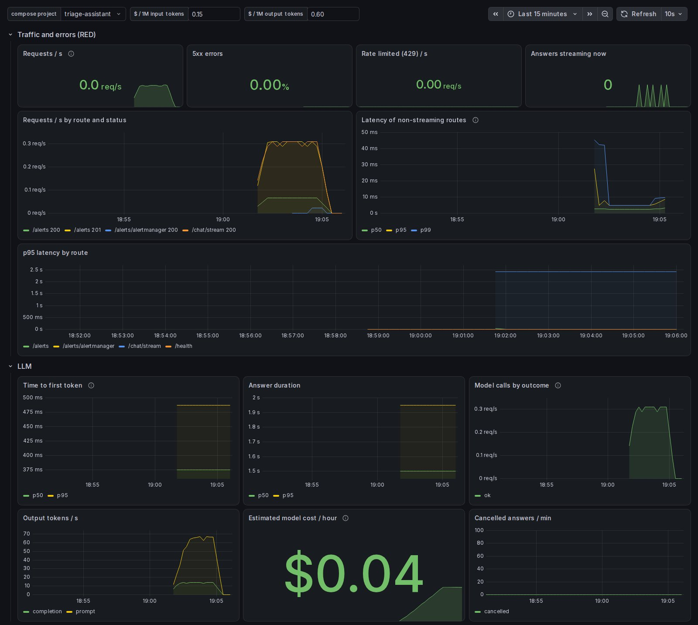

Contents
- How to read this handbook
- Contents
- 1 · The anatomy of a modern service repository
- 2 · The system end to end
- 3 · Linux and processes
- 4 · Networks: DNS, TCP, TLS and HTTP
- 5 · Concurrency and the Python backend
- 6 · Postgres: schema changes and indexes
- 7 · Connections, pooling and row-level security
- 8 · Sign-in, sessions and roles
- 9 · Secrets, personal data and least privilege
- 10 · Frontend decisions and streaming
- 11 · The edge: TLS, nginx and proxies
- 12 · Containers and Compose
- 13 · Testing, code style and review
- 14 · Observability and debugging
- 15 · Reliability: timeouts, failures and drills
- 16 · Performance and load testing
- 17 · Incidents, runbooks and service levels
- 18 · The stack catalog
- 19 · Starting a new service
- A · Glossary
- B · Decision index
- C · Repository index
- D · Trap index
Engineering Handbooks
Handbook 2 of 3Modern Software Engineering
Your skills, brought up to date: how a production service and its repository are built today.
For engineers who have built and run services before and are returning to the work. It assumes you know what a database, a web server and a test are, and shows how each is done now, why it changed, and where to see it working in a real, public codebase.
Edition 1 · Reference implementation: triage-assistant at handbook-1 (175579a)
How to read this handbook
Every chapter is anchored to one real system: triage-assistant, an on-call assistant built as the template a team starts its AI services from. Alerts live in Postgres, owned by teams. People sign in with the organization's identity provider and see only their teams' alerts. A model answers their questions from those alerts and the team's runbooks, and cites what it used. The service was load-tested, broken on purpose, and deployed to AWS through a real pipeline. Its code is public at github.com/Parzon/triage-assistant.
Numbers in this handbook come from that system unless the text says otherwise, and each is given with the setup it was measured on. Code links point to the exact version this edition was checked against, so the line numbers beside an excerpt are the ones you will see on GitHub.
Three ways through this handbook, depending on what you need first:
| If you want to | Read |
|---|---|
| Find your way around a modern service | Chapters 1, 2, 12 and 19: the repository, the system, containers, starting a new service |
| Refresh the foundations | Chapters 3 to 9: Linux, networks, concurrency, Postgres, pooling, sign-in, secrets |
| Run it in production | Chapters 11 and 14 to 17: the edge, observability, reliability, performance, incidents |
Each chapter has the same parts, so you can read at the depth you need:
Contents
Part I · The service and its repository
Part II · Foundations, refreshed
Part IV · Identity and protection
Part V · The web tier
Part VI · Containers
Part VII · Quality
Part VIII · Running it
Part IX · Choosing and starting
Appendices
Part I · The service and its repository
The anatomy of a modern service repository
A modern service repository holds far more than source code: the commands to run it, its environments, its quality gates, its decisions, its emergency procedures and its automation all live beside the code, versioned and reviewed the same way.
- The repository is the service's documentation, configuration and operating manual, not only its source.
- Every kind of file has one job: a way in for newcomers, a contract for AI coding tools, decision records, runbooks, one command interface, an environment overlay per use, a configuration contract.
- Quality gates are code too: pipelines, scanners with expiring exceptions, alert rules with unit tests, dashboards generated from code.
- Documents have lifetimes: a product requirements document lives until the feature ships, a proposal until it is decided, a decision record forever.
- One shape across projects means an engineer joining the seventh project already knows where everything is.
| Then | Now | Why it changed |
|---|---|---|
| A README; design notes on a wiki; decisions in email threads | Docs as code: decision records, runbooks and handbook chapters in the repository, reviewed in pull requests | A wiki drifts away from the code; the repository changes with it. |
| "Install Python, Postgres and Node, then follow these 20 steps" | Every toolchain in containers, behind one command interface | The image is the environment, so "works on my machine" disappears. |
| A config file per environment, often with secrets in it | A configuration contract (.env.example) and values from the environment; production refuses unsafe ones | Secrets stay out of Git, and bad configuration fails at startup, not at 3 a.m. |
| Build jobs configured in a server's web interface | Pipelines as YAML files in the repository | Reviewable, reproducible, and versioned with the code they build. |
| Monitoring configured by hand in a dashboard tool | Alert rules with unit tests; dashboards generated by code | Changes are reviewed, and nothing is lost when a tool reloads. |
| Conventions held in senior engineers' heads | AGENTS.md, code owners, a pull request template, lint and type checks | Humans and AI coding agents read and obey the same written contract. |
The map
The reference repository is grouped below by purpose rather than by folder. Each group answers one question a newcomer asks.
The way in
A newcomer should go from cloning the repository to a running stack in under an hour, ideally with one command, and know what to read next. Four files carry that:
- README says what the service is and how to run it.
- START_HERE is a reading path in four levels: how one question gets answered (the core), the production shape, operations, and the AI depth. Each level says what to read, what to run, and what you can explain afterwards.
- The code map gives one line per file, saying what it is for, with a star on every file a user's question passes through, in the order it passes.
AGENTS.mdis the contract for AI coding tools such as Claude Code and Codex: the commands, the conventions, and what they must not do. Tools read it automatically from the repository root; when an agent gets something wrong twice, the fix belongs in this file.
Two files a newcomer and an AI agent read first. The code map is a table, one row per file; the stars trace a question from the HTTP route to the model and back. AGENTS.md ends with prohibitions, each one there because something went wrong once.
- The code map's job is "what is this file for", not how it works: that keeps it short enough to stay current.
- The prohibitions protect the team's controls from a helpful agent: no editing a merged decision record, no exempting a scan finding to get green, no weakening an eval case to make a run pass.
| File | What it is for |
|---|---|
| `asgi.py` | the entrypoint gunicorn and uvicorn load; process-wide setup (logging, tracing) |
| `main.py` | the application factory: creates the engine, clients and settings in the lifespan, mounts the routes |
| `config.py` | every setting, read from the environment and checked at startup; production refuses unsafe ones (ADR-0023) |
| `routes/chat.py` ★ | `POST /chat/stream`: checks the rate limit, then the off switch; gathers the context, streams the answer |
| `queries.py` ★ | the reads shared by routes: the alert list and the chat's context use the same visibility rule |
| `runbooks.py` ★ | runbooks split into sections, embedded, and searched (full-text and vector, the asker's teams only) |
| `redact.py` ★ | removes credentials from alerts, runbooks and questions before any model sees them |
| `triage.py` ★ | the prompt (`SYSTEM_PROMPT`), what the model is given, and its stream turned into client events |
| `llm.py` ★ | the seam to any OpenAI-compatible model: streaming, timeouts, typed errors, token counts |
| `sse.py` ★ | the Server-Sent Events wire format: one JSON line per event, heartbeats |## What agents should NOT do
- Don't modify `infra/` without being explicitly asked.
- Don't add a new third-party service/dependency without flagging it in
the PR description first.
- Don't edit a merged `docs/adr/*.md` file — write a new ADR that
supersedes it instead.
- Don't make a scan pass by exempting its finding. An entry in
`.trivyignore.yaml` needs a statement (why, who accepted) and an expiry
at most 90 days out; a line in `.gitleaks.toml` or `.gitleaksignore`
needs the value shown to be fake. A real secret is rotated first.
- Don't weaken, delete or re-label an eval case, a calibration answer or a
retrieval question to make a run pass. A failing case is a claim to investigate: read the
answer and the judge's reason, and change a check only when the check is
shown wrong, in its own commit, saying why in the case's `notes`.Documents, by job and lifetime
A team writes several kinds of document, and confusing them is how documentation rots. Each answers a different question, for a different reader, and lives for a different length of time.
| When you… | Write |
|---|---|
| are proposing what to build, and why | a PRD: problem, goals, non-goals, measurable success, user stories |
| want agreement on an approach before building | an RFC: summary, motivation, approach, alternatives, trade-offs, rollout |
| made a decision someone will later ask "why?" about: a dependency, a schema shape, a timeout, a deployment pattern | an ADR |
| found a procedure someone will need under pressure | a runbook |
| learned something the next person will trip over | a line in the handbook chapter, and in the list of traps |
Architecture decision records
An architecture decision record (ADR) is a one-page record of one decision: the context that forced it, the decision, the alternatives considered and rejected, and the consequences, good and bad. It is written when the decision is made and never edited afterwards. When the decision changes, a new ADR supersedes the old one, which keeps the history of why the system is the way it is. Teams keep them so that the next engineer, or the infrastructure team inheriting the service, can learn the reasoning without asking around.
The reference repository holds 26 ADRs, and most of them can be seen at work in the code. Take ADR-0015: it decides that a rollback deploys the old code and never reverses the database schema. You can see it carried out in the deploy script: before migrating, it asks whether the image knows the database's current revision; if not, the database is ahead, so this is a rollback, and it runs the older code on the newer schema without migrating.
The comment restates the decision record in the place a future editor will read it. The code asks the database which revision it is on, then asks this release's migration tool whether it knows that revision.
- If not, the database is ahead: "rolling back the code only, no migration".
- Only that one message means "ahead". Any other failure, such as Docker being unavailable or an image that does not start, stops the deploy. Reading every failure as a rollback would skip a migration the new code needs.
- The comment also states the limit: safe down to the release before a contract migration, never past it, with the real versions as the example.
# A rollback: the database already carries a newer release's migrations,
# which this image's Alembic has never heard of ("Can't locate revision").
# Run this release's code on the newer schema, without migrating. That is
# safe only if this release can run on it - down to the release before a
# contract migration, never past it (v0.3.0 -> v0.2.0 yes, -> v0.1.0 no).
# Migrations are never reversed automatically: `alembic downgrade` is a
# deliberate, separate step.
current=$("${COMPOSE[@]}" exec -T db sh -c \
'psql -U "$POSTGRES_USER" -d "$POSTGRES_DB" -tAc "SELECT version_num FROM alembic_version" 2>/dev/null' || true)
ahead=no
if [ -n "$current" ] && ! shown=$("${COMPOSE[@]}" run --rm --no-deps -T migrate alembic show "$current" 2>&1); then
# Only this message means "a newer release migrated it". Any other failure
# (Docker unavailable, an image that does not start) is a failed deploy,
# not a rollback: reading it as one would skip the migration.
if ! grep -q "Can't locate revision" <<< "$shown"; then
printf '%s\n' "$shown" >&2
echo "could not check the database's revision against $TAG: deploy stopped" >&2
exit 1
fi
ahead=yes
fi
if [ "$ahead" = yes ]; then
step "the database ($current) is ahead of $TAG: rolling back the code only, no migration"
else
step "migrate"
"${COMPOSE[@]}" run --rm migrate
fiConfiguration as a contract
Twelve-factor applications take their configuration from the environment, and the reference service adds two safeguards around that. .env.example is committed: it lists what a first run sets, with placeholders and comments, and the settings reference in the repository's docs lists every variable, with its default. The real .env is generated from it with fresh secrets and is never committed. At startup, typed settings are validated, and in production mode the service refuses to start on unsafe values, naming each problem.
The production checks are a function that returns every problem by name, each with a message that says what is wrong and how to fix it. Startup fails if any is present, unless a deployment waives a check by name, explicitly.
- A public URL that is really localhost; session cookies over plain HTTP; the fake model; the demo identity provider.
- A security property is a test, not a checklist line: each refusal has a unit test.
- The reference AWS stage, with no domain and no paid model, ran with exactly two named waivers.
def production_problems(settings: Settings) -> dict[str, str]:
"""The production checks these settings fail: name -> what is wrong."""
problems: dict[str, str] = {}
public = _host(settings.public_url)
if public in _LOCAL_HOSTS or public.endswith(".localhost"):
problems["localhost_url"] = (
f"PUBLIC_URL is {settings.public_url}: no other machine reaches it, and "
"sign-in redirects there. Set the address users open."
)
if not settings.session_cookie_secure or settings.public_url.startswith("http://"):
problems["insecure_cookies"] = (
"session cookies would travel over plain HTTP: PUBLIC_URL must be https:// "
"and SESSION_COOKIE_SECURE true."
)
if (
_host(settings.llm_base_url) == "mock-llm"
or settings.llm_model.startswith("mock")
or (settings.embedding_model or "").startswith("mock")
):
problems["mock_model"] = (
"LLM_* or EMBEDDING_MODEL name the mock: set the provider's, and drop "
'"mock" from COMPOSE_PROFILES.'
)
if _host(settings.oidc_metadata_url) == "keycloak":
problems["demo_identity_provider"] = (
"sign-in goes to the bundled Keycloak and its demo users: set OIDC_* to the "
'organisation\'s provider, and drop "idp" from COMPOSE_PROFILES.'
)One command interface, and an overlay per environment
Every toolchain runs in a container, so the host needs only Docker, make and Git. A Makefile is the single entry point: its targets are thin wrappers over the real container commands, so anyone can read a recipe and run the underlying command directly. Running the default target lists the commands a newcomer needs in their first weeks.
Environments are Compose overlays on one shared base file, so development, tests and the production shape cannot drift apart without it showing in a diff.
Quality gates, as code
Every check a change must pass is a file in the repository, and so is every exception to a check.
- Pipelines: CI on every pull request, a release on every version tag, a weekly scan, a deploy (Handbook 3).
- Review rules: code owners name who must approve each path, and the pull request template asks for the evidence.
- Updates: Dependabot opens grouped update pull requests for packages, actions and base images.
- Exceptions with expiry: accepted vulnerabilities and known fake secrets live in files that code owners must approve, and accepted risks expire within 90 days.
- Monitoring: alert rules ship with unit tests that feed synthetic metrics and assert which alerts fire; dashboards are generated by a script, so an edit made in the dashboard tool cannot be lost on reload.
A unit test for an alert rule. It feeds two synthetic time series, one api worker losing the identity provider and one not, and asserts that the alert has not fired at 90 seconds but has fired, with the right labels and runbook link, at four minutes.
- The test documents the rule's behavior: "fires after two minutes, on any worker".
- Every alert carries a link to its section of the alert runbook, so the person paged lands on the procedure.
- CI runs these tests on every pull request, like any other test.
tests:
- name: An unreachable identity provider fires after two minutes, on any worker
interval: 30s
input_series:
- series: 'identity_provider_up{instance="api-1"}'
values: "1 1 0x10"
- series: 'identity_provider_up{instance="api-2"}'
values: "1x12"
alert_rule_test:
- eval_time: 1m30s
alertname: IdentityProviderDown
exp_alerts: []
- eval_time: 4m
alertname: IdentityProviderDown
exp_alerts:
- exp_labels: {severity: high}
exp_annotations:
summary: "the identity provider does not answer: new sign-ins fail (signed-in users are unaffected)"
runbook_url: "https://github.com/Parzon/triage-assistant/blob/main/docs/runbooks/alerts.md#identityproviderdown"
One shape for every project
The reference repository is also a template, and its first decision record explains why. The team's job is proving AI capabilities; services that prove out are handed to infrastructure engineers to run. For that handover to be fast, everything that is not the AI logic itself should look the same from project to project, so an engineer inheriting the seventh project already knows where everything is. Chapter 19 covers starting a new service from it: what to keep, what to replace and what to configure.
Traps
| Symptom | Cause | Fix |
|---|---|---|
A setting changed in .env has no effect | Compose passes a variable to a container only if that service lists it | List every setting with no value under environment:; check it in lint. |
| Two stacks in one directory interfere: the dev api reports a release's version | .env is shared by every Compose project in the directory | Give the second stack its own ports and project name on the command line. |
| The development overrides silently stop applying | Passing any -f turns off the automatic merge of compose.override.yaml | List it explicitly together with the other overlay. |
| A service enabled by a profile disappears | --profile X replaces the profile list from .env | Set the full list instead. |
| An empty setting crashes a server at import | An empty variable is not an unset one | Treat empty as unset in configuration code, and test it. |
| A dashboard change made in the tool is gone | Dashboards are regenerated from code | Change the generator, then regenerate. |
| A merged decision record was quietly rewritten | Editing instead of superseding | Write a new record that supersedes the old; protect the folder with code owners. |
Questions
-
What is the difference between a PRD, an RFC and an ADR, and how long does each live?
Answer
A PRD says what to build and why, and lives until the feature ships. An RFC proposes how, and lives through its review. An ADR records one decision and its reasons, and is permanent: superseded by a later ADR, never edited.
-
Why is a merged decision record never edited?
Answer
Because its value is the record of what was decided and why at the time. A new record that supersedes it keeps both the old reasoning and the reason for the change, so the history reads in order.
-
Why does
.env.examplebelong in Git while.envnever does?Answer
.env.exampleis the contract: every variable, with placeholders and explanations, and no secrets..envholds real values and secrets for one machine, generated from the example. -
What do code owners add to branch protection?
Answer
They say whose approval each path needs, so a change to migrations, infrastructure, decision records or accepted risks cannot merge without the people responsible for them.
-
Why unit-test alert rules?
Answer
An alert that never fires, or fires on a blip, is discovered during an incident. A test with synthetic metrics proves when it fires and with which labels, and documents the rule's intent.
Part I · The service and its repository
The system end to end
The reference service is a modular monolith (one api, one database, a web app and an edge proxy), and following a single question from the browser to the model and back explains almost every design choice in it.
- Six parts in the production shape: an HTTPS edge, nginx serving the web app, the api, a connection pooler, Postgres with vector search, and Valkey for shared counters. Outside it: the identity provider and the model.
- Four request paths matter: signing in, reading alerts, asking the assistant, and the alert webhook.
- A question passes through about eight small modules, each with one job, in a fixed order.
- The api is one deployable on purpose. The first splits, when they come, are separate deployments of the same code, not separate codebases.
- The api is stateless: sessions live in Postgres and counters in Valkey, so any replica serves any request.
| Then | Now | Why it changed |
|---|---|---|
| A three-tier application: web, application, database | The same tiers, plus an identity provider and a model behind narrow seams | Sign-in and AI became external services with their own failure modes. |
| Microservices from day one | A modular monolith until a measured need appears | Every network hop adds failure modes, latency and operations work. |
| Server-rendered pages with sticky sessions | A static single-page app, a stateless api, state in shared stores | Replicas can be added and removed freely. |
| Request, wait, full response | Streamed answers, token by token | A model takes seconds; users should see the first words, not a spinner. |
The system on one page
Four request paths cover almost everything the service does:
- Sign in. The browser goes to the api's login route, then to the identity provider's page, then back to the api's callback. The api exchanges the one-time code over its own back channel, verifies the ID token, copies the user's teams and roles from the token, and sets a session cookie (Chapter 8).
- Read alerts. Edge, nginx, api (cookie to user to teams, in one query), pooler, Postgres: only the caller's teams' alerts, in about 4 ms at 500 requests a second.
- Ask the assistant. The api finds the runbook sections that match the question and loads the asker's visible alerts, removes credentials, and streams the model's answer back as Server-Sent Events with a heartbeat every 15 seconds, then the sections it cited. Stop in the browser cancels the model call.
- The alert webhook. Alertmanager posts to the api with a bearer token, and the alert is stored in the team its label names.
One question, through the code
The core path is the one to know by heart. It touches about eight modules, and each does one thing.
The heart of the chat route. The comment states the rule that shapes the whole service: the model sees exactly what the asker may see, read with the same query the alert list uses.
- Both reads take
principal.team_ids(), the caller's teams from their session, never a team from the request body. - The question is embedded first, with no transaction open, so no pooled database connection waits on the model.
- Everything is loaded before the response starts, which keeps errors clean and connections short.
# The model sees exactly what the asker may see: their teams' alerts,
# read with the same query as the alert list, and their teams' runbook
# sections, searched under the same rule. Loaded before the response
# starts, so a database failure is still a clean JSON 503; the session
# is closed when this function returns (DbSession's scope), so no
# connection is held while the model streams for tens of seconds.
retrieval: Retrieval | None = None
if settings.rag_context_chunks and state.llm.embedding_model is not None:
# First: it embeds the question with no transaction open.
retrieval = await search_runbooks(
db,
state.llm,
settings,
payload.message,
principal.team_ids(),
k=settings.rag_context_chunks,
)
alerts = await newest_alerts(db, principal.team_ids(), limit=settings.chat_context_alerts)
sections = retrieval.hits if retrieval else []
messages = build_messages(payload.message, alerts, sections)The data
A modular monolith, on purpose
The api is one process type, one deploy and one database, with visible internal boundaries: the AI logic is two files, identity is three (one speaks the protocol, one turns a cookie into a user, one decides what that user may do), and the rest is the standard scaffold every service from the template shares. The web app is a separate artifact because it has a different toolchain and runtime, not because it is a microservice.
Splitting was considered and measured against. Every network call between services can hang, time out, or succeed after the caller gave up, and making a single dependency (Postgres through the pooler) fail cleanly took a whole decision record's worth of work. Latency adds up hop by hop, each service needs its own pipeline, dashboards and runbook, and data that used to join becomes an API call or a copy that drifts. Splitting pays off with several teams or a component with a very different load profile, and neither is true yet. Complexity should follow measured pain.
| What would split first | When | How |
|---|---|---|
| Streaming chat | Chat load dominates the api's CPU (500 streams saturate 2 CPUs), or chat needs its own scaling policy | The same image as a second deployment serving only the chat route: a split at the load balancer, not in the code |
| A model gateway | Several services call models and need shared keys, quotas, cost tracking and fallback | A gateway in front of the providers; only the model's base URL changes |
| Alert ingestion | Webhook bursts slow user requests, or ingestion must survive the api being down | A queue plus a worker process from the same codebase |
| The frontend | Global users, or static traffic competing with the api | The build output on object storage behind a CDN |
The pattern: the first splits are deployments of the same codebase, which buys independent scaling without network calls between your own components. And the scaling path comes in a fixed order, cheapest first: fix the query (the first real bottleneck was a missing index, p95 7 seconds down to 4 ms), give the api more CPU, add stateless replicas behind a load balancer, separate chat from reads, add database read replicas once the database is the measured bottleneck, and put bursty writes behind a queue.
Traps
| Symptom | Cause | Fix |
|---|---|---|
| Streaming worked in development and arrived all at once in production | The production proxy buffered the response; development had no proxy | Prove changes in the production shape before calling them done. |
| The production image crashed on an import that worked in development | A development-only dependency masked a missing runtime one | Build and run the production image in CI; check every module imports. |
| A per-user limit allows N times the configured rate | Counters kept in each worker's memory | Shared state in a shared store; the api stays stateless. |
| The VM or the front proxy is down and no alert fires | Every check runs inside the stack that failed | An outside-in uptime check, and a dead man's switch for monitoring itself. |
Questions
-
Why does the chat route load the alerts and runbook sections before the response starts streaming?
Answer
So a database failure can still be answered with a clean JSON error, and so no database connection is held for the tens of seconds the model streams.
-
What makes the api safe to scale out to many replicas?
Answer
It is stateless: sessions live in Postgres and rate-limit counters in Valkey, so any replica can serve any request without sticky sessions. The database connection budget sets the practical limit.
-
When would you split the streaming chat out, and how?
Answer
When chat dominates the api's CPU or needs its own scaling policy. The first step is the same image deployed twice, with the load balancer sending only the chat route to the second deployment: no code split.
-
What is the first thing to try when the service is slow?
Answer
Find and fix the slow query. The reference service's first bottleneck was a missing index; no amount of scaling would have fixed it.
Part II · Foundations, refreshed
Linux and processes
Containers did not replace Linux, they made it unavoidable: a service is still a process that holds a port, receives signals, lives inside kernel-enforced limits and leaves an exit code, and reading those correctly is most of what debugging a container means.
- Exit codes above 128 mean "killed by signal N": 137 is SIGKILL, almost always the out-of-memory killer; 143 is SIGTERM, a polite stop.
- A graceful stop is SIGTERM, a grace period to finish in-flight work, then SIGKILL. The grace period must cover the longest request.
- Memory limits are kernel cgroups; when a limit is hit, the kernel kills a process with no chance to log. With swap allowed, a limit is not a wall.
- A process inside a container sees the host's CPU count unless it reads its own cgroup limits.
- Most servers run a Debian or Red Hat family distribution; container images are usually a slim Debian or Alpine, and Alpine's C library breaks some compiled Python packages.
| Then | Now | Why it changed |
|---|---|---|
| A long-lived server you log into and inspect | Disposable containers, inspected from outside through logs, metrics and exit codes | The container may already be gone when you look. |
| init scripts and a process supervisor on each host | The container runtime or orchestrator restarts processes | Restart policy is configuration, not a script. |
| "The machine has 8 cores, so 17 workers" | Workers sized from the container's CPU limit | A container often gets a fraction of the host. |
| A process grows until the machine swaps | A hard memory limit per container, and a kill when it is hit | One leak kills one container, not the host. |
Exit codes and signals
A process's exit code is the first clue in any container post-mortem, and the important ones are few. Codes from 128 upwards are not chosen by the program at all: the shell reports 128 plus the number of the signal that killed it.
Stopping a process gracefully
A graceful stop has three steps. The runtime sends SIGTERM; the server stops accepting new connections and finishes what it is doing; if it has not exited when the grace period ends, the runtime sends SIGKILL. docker stop waits 10 seconds by default; docker kill sends SIGKILL at once. For a service that streams model answers for up to two minutes, the default is far too short.
stop_grace_period, ECS stopTimeout, Kubernetes terminationGracePeriodSeconds), or the kill arrives mid-answer.What holds a port, and which process is which
When something already listens on a port, ss -ltnp shows the listening socket and the process that owns it (an empty process column means another user owns it, so run it again with sudo). ps -p <PID> -o pid,ppid,user,lstart,cmd says who started it and when, and pstree -p <PID> shows its family. One parent with several identical children is the pre-fork worker model: one master that opened the socket, and workers that inherited it (Chapter 5).
The same tools explain the classic "port is already allocated" error from Docker: usually a forgotten stack still running. And when a network test gives a suspiciously perfect result, such as a 0.02 ms response or an instant success, the command probably ran on the wrong machine.
Limits the kernel enforces
A container is an ordinary process that the kernel isolates with two features. Namespaces give it a private view: its own process numbering, network stack and filesystem root. Control groups (cgroups) limit and account its resources: memory, CPU time, disk throughput and the number of processes. Disk space and GPUs are not cgroup limits; GPUs are handed to containers as whole devices.
Three more silent failures of memory limits are worth knowing. An out-of-memory kill of one worker inside a container leaves the container "healthy": only a log line from the parent, a cgroup counter and an alert record it. Docker's own OOMKilled flag can read false even after the main process was killed; the kernel's log (journalctl -k) is the authority. And lowering a live container's limit kills processes even when swap is allowed.
The server sizes its worker pool from the CPUs it may use. Python's os.cpu_count() reports the host's cores even inside a limited container, so the configuration reads the cgroup's CPU quota directly.
/sys/fs/cgroup/cpu.maxholds "quota period", or "max period" when unlimited; quota divided by period, rounded up, is the usable CPU count.- The same file is written by a Compose
cpus:limit, an ECS task's CPU, or a Kubernetes limit, so one image sizes itself correctly everywhere. - Pinning to specific cores is covered by the CPU affinity call.
def available_cpus(cpu_max: Path = Path("/sys/fs/cgroup/cpu.max")) -> int:
"""CPUs this container may actually use.
os.cpu_count() reports the host's cores even inside a CPU-limited
container. A `--cpus` / compose `cpus:` / ECS / Kubernetes CPU limit is
the cgroup v2 quota in cpu.max: "<quota> <period>", or "max <period>"
when unlimited. sched_getaffinity() covers `--cpuset-cpus`.
"""
try:
quota, period = cpu_max.read_text().split()
if quota != "max":
return max(1, -(-int(quota) // int(period))) # ceiling division
except (OSError, ValueError):
pass
return len(os.sched_getaffinity(0))How many containers fit on one host?
There is no fixed number. An idle container costs a few megabytes; the limit is the sum of what the containers actually use: memory (the working set, not the idle size), CPU, process counts, open files, disk and network connection tracking. Measure with docker stats, add up the working sets, add 20 to 30 percent headroom and the host's own needs, and give each container a memory limit so that one leak kills only itself. Memory is the resource that kills; the others mostly degrade: CPU starvation, process or file-descriptor exhaustion, a full disk from image layers and logs.
Distributions, and the images built on them
| Family | Members | Packages | Where you meet it |
|---|---|---|---|
| Debian | Debian, Ubuntu | apt, .deb | Most servers (Ubuntu LTS); the -slim container images |
| Red Hat | RHEL, Rocky, Alma, Fedora, Amazon Linux | dnf, .rpm | Enterprises; Amazon Linux on AWS |
| Alpine | Alpine | apk | Tiny container images, built on the musl C library and busybox |
A distribution is the kernel plus the userland, a package manager and defaults. For Python services, the choice of base image matters more than it looks: most compiled Python packages ship wheels built for glibc, and Alpine's musl library cannot use them, so installs either fail or compile from source. A slim Debian image is the usual default.
Debugging at the kernel boundary
- The kernel's own log,
journalctl -kordmesg, is the authority on who the out-of-memory killer killed and why. stracestops a process at every system call: extremely informative and extremely slow, for a single reproduced problem.- Slim images have no
ps:docker topfrom the host lists a container's processes. - A sidecar debug container started in the target's network namespace sees exactly what the application sees, with tools the application image does not carry.
Traps
| Symptom | Cause | Fix |
|---|---|---|
| A container dies with exit 137 and no error in its log | The OOM killer sent SIGKILL | Read the kernel log and the cgroup's OOM counter; raise the limit or fix the leak. |
| Memory grows past the limit without any kill | Swap is allowed: the default is as much again | Set the swap limit equal to the memory limit. |
| A stopped-on-purpose container stays down after a "crash test" | docker kill counts as a manual stop, so the restart policy ignores it | Simulate crashes with SIGKILL from the host's process namespace. |
| An unhealthy container is never restarted | Docker's restart policies act on exit only; "unhealthy" matters to orchestrators and dependencies | Let an orchestrator act on health, or make the process exit. |
| A worker pool is far too large inside a container | os.cpu_count() reports the host's cores | Read the cgroup's CPU quota. |
| A wait loop never ends, or a kill loop kills itself | pgrep -f or pkill -f matches the shell running it | Track and kill by process ID. |
| A script carries on after a failed command | ! cmd is exempt from set -e | Test the condition explicitly with if. |
| A rename put a directory inside another | mv src existing-dir moves into the directory | Check the target does not exist, or use mv -T. |
A password was pasted into a chat to get past sudo | sudo needs a terminal for its prompt | That password is burned: rotate it. |
Questions
-
A container exits with 137 and nothing in its log. What happened, most likely, and where do you confirm it?
Answer
It was killed by SIGKILL, almost always the kernel's out-of-memory killer enforcing the container's memory limit. Confirm it in the kernel log and the cgroup's OOM counter; Docker's own flag is not always reliable.
-
Why must the application's drain time be shorter than the platform's stop grace period?
Answer
Because when the grace period ends, the platform sends SIGKILL. If the application is still finishing a long stream, that stream is cut off mid-answer.
-
Why can a 50 MB memory limit let a container use 95 MB?
Answer
With swap available and no swap limit, Docker allows as much again in swap. The container slows down instead of being killed. Setting swap equal to memory makes the limit a wall.
-
Why might a Python service fail to install its dependencies on an Alpine base image?
Answer
Alpine uses the musl C library, and most precompiled Python wheels target glibc. Installs fall back to compiling from source, which needs compilers and headers, or fail.
Part II · Foundations, refreshed
Networks: DNS, TCP, TLS and HTTP
Every request is a stack of protocols wrapped inside each other, HTTP inside TLS inside TCP inside IP, and knowing what each layer does, and how each one fails, turns "it can't connect" from a mystery into a short checklist.
- A request goes DNS (find the address), TCP (a reliable byte stream), TLS (encryption and identity), then HTTP (the request itself).
- TLS does three jobs: confidentiality, integrity and authentication. Certificates prove identity; a key agreed per session encrypts the data, so a stolen server key cannot decrypt recorded traffic.
- "Connection refused" means the path works and nothing listens; a timeout means packets vanish. They point to different places.
- A server bound to
127.0.0.1accepts only local connections; inside a container that means not even through a published port. - HTTP/2 multiplexes streams over one connection; HTTP/3 moves to QUIC over UDP to stop one lost packet from stalling every stream.
| Then | Now | Why it changed |
|---|---|---|
| HTTPS only on login pages | HTTPS everywhere, with free automated certificates | Certificates became free and automatic; browsers mark HTTP as unsafe. |
| RSA key transport | Ephemeral Diffie-Hellman in TLS 1.3, giving forward secrecy | A stolen server key must not decrypt years of recorded traffic. |
| HTTP/1.1, six connections per site | HTTP/2 and HTTP/3 at the edge; HTTP/1.1 behind it | Multiplexing and faster handshakes for clients; simplicity inside. |
| A VPN to reach internal machines; ports opened for public services | Mesh networks for private access; outbound tunnels for public exposure | Nothing listens on the open internet, and each device has a stable private address. |
A request, layer by layer
What TLS actually guarantees
Encryption solves three separate problems: confidentiality (nobody can read it), integrity (nobody can change it unnoticed) and authentication (the server is who it claims). TLS combines four tools to get all three.
| Tool | What it does | Its role in TLS |
|---|---|---|
| Symmetric encryption | One shared key encrypts and decrypts; fast | Carries all the data, with the session key |
| Asymmetric key pairs | A public key anyone may have, a private key only the owner has; slow | The server signs the handshake to prove it holds the private key |
| Key agreement (Diffie-Hellman) | Two strangers derive the same secret over an open channel | Produces the session key without ever sending it |
| Certificates | A public key and a domain name, signed by a certificate authority whose root ships with the operating system or browser | Answer "whose public key is this?" |
Why a certificate cannot decrypt anything: it holds only the public key. The private key never leaves the server, and the session key does the encrypting. A machine in the middle cannot sign the handshake as example.com without that private key, so the client's checks fail. When both sides present certificates, the connection is mutual TLS, common between services.
Three related distinctions come up constantly. In transit means TLS, SSH or a VPN; at rest means disks, databases and object storage, usually with envelope encryption: a data key encrypts the data, and a master key in a key management service encrypts the data key. Encryption is reversible with a key; hashing is one-way (passwords are stored as salted hashes, never encrypted); encoding, such as base64, is formatting, not secrecy.
HTTP: versions and status codes
HTTP/1.1 sends one request at a time per connection, so browsers open about six. HTTP/2 is binary and multiplexes many streams over one TCP connection, with header compression, but one lost packet stalls every stream on it (TCP's head-of-line blocking). HTTP/3 runs over QUIC, built on UDP: loss affects only its own stream, TLS 1.3 is built in, handshakes are faster, and connections survive a change of network. The common setup is HTTP/2 or 3 between clients and the edge, and HTTP/1.1 behind it. gRPC needs HTTP/2.
| Status | Meaning, and what it usually tells you |
|---|---|
| 200, 201, 202, 204 | OK; created; accepted for later processing (a webhook receiver or a queued job); no content |
| 301, 302, 304 | Moved permanently; temporarily; not modified, so the cached copy is still valid |
| 400, 422 | Malformed request; a validation failure (FastAPI's choice, not 400) |
| 401, 403, 404 | Not authenticated ("who are you?"); authenticated but not allowed; not found. Return 404, not 403, for things a caller may not even know exist |
| 405, 409, 429 | The path exists but not with that method; a conflict; rate limited |
| 500 | An unhandled exception in the application |
| 502 | The proxy got no valid response: the backend is down or crashed |
| 503 | Deliberately unavailable: overloaded, draining, or a dependency is down |
| 504 | The proxy gave up waiting: the backend is up, but too slow |
"I can't reach it": a method
The most common single cause is the bind address. 127.0.0.1 (the loopback interface) never leaves the machine, so a server bound there accepts only local connections; 0.0.0.0 listens on every interface. Inside a container, a server bound to loopback is unreachable even through a published port, because the published port arrives on the container's own network interface.
The opposite mistake is just as common in development: publishing a port on all interfaces. Docker's published ports are inserted into the host's packet filtering before the host firewall's rules, so a port published on 0.0.0.0 is reachable from the network even when the host firewall says otherwise.
The development overlay publishes the api's port only on the host's loopback address by default, and says why in its first lines.
- A developer's stack is not reachable from the office network unless they choose so with
BIND_ADDR. - The reason given is the firewall trap: published ports bypass host firewalls such as ufw.
- In the production shape only the HTTPS edge is published at all; the api, database and cache have no host ports.
# Development overrides, merged automatically by plain `docker compose ...`.
# Source is bind-mounted for hot reload. Ports bind to 127.0.0.1 unless
# BIND_ADDR says otherwise, so a dev stack is not reachable from the network
# (published ports bypass host firewalls such as ufw).
services:
api:
build:
target: dev
# Your UID and GID for the image's `dev` user (make exports them).
args:
DEV_UID: ${DEV_UID:-1000}
DEV_GID: ${DEV_GID:-1000}
ports:
- "${BIND_ADDR:-127.0.0.1}:${API_PORT:-8010}:8010"Private access without open ports
Two tools changed how small teams reach machines. Tailscale builds a private WireGuard mesh: every device gets a stable private address, and nothing is exposed publicly. Cloudflare Tunnel runs a small agent on the machine that opens an outbound connection to Cloudflare, which maps public hostnames to local ports, so the machine never listens on the internet at all.
Below HTTP, two transports remain. TCP is reliable and ordered, with a handshake, retransmission and congestion control. UDP is fire-and-forget datagrams with none of that: low overhead for DNS, video, games and QUIC.
Traps
| Symptom | Cause | Fix |
|---|---|---|
| The service works on the box but nobody else can reach it | It is bound to 127.0.0.1 | Bind to 0.0.0.0 inside the container, and publish deliberately. |
| A port the firewall blocks is reachable from the network | Docker's published ports bypass the host firewall | Publish on loopback, or filter in Docker's own chain. |
| A client reports a name-resolution error, not "refused", when a service is down | A stopped container disappears from Docker's internal DNS | Treat resolution errors as "unavailable" and answer 503. |
| A database came back but clients failed for another 15 seconds | The connection pooler cached the failed DNS answer | Lower the negative DNS cache time. |
| Sequential test clients look like one client | Docker reuses the lowest free IP address | Run clients concurrently, or identify them some other way. |
| Every local port suddenly insists on HTTPS | An HSTS header was sent for localhost | Disable HSTS locally; set a long max-age only for a real domain. |
Questions
-
What is the difference between "connection refused" and a timeout, and where does each point you?
Answer
Refused means a packet reached the machine and was rejected, so the path works and nothing listens on that port: look inside the host or container. A timeout means packets vanished: look along the path, at firewalls, routes, or a frozen process.
-
Why can a public certificate not be used to decrypt traffic?
Answer
It contains only the public key. The data is encrypted with a session key agreed per connection, and proving identity needs the private key, which never leaves the server.
-
What is forward secrecy, and what provides it?
Answer
The property that a later theft of the server's private key cannot decrypt traffic recorded earlier. It comes from ephemeral Diffie-Hellman key agreement: a new secret for every session, never stored.
-
A proxy returns 502 and later 504. What does each suggest about the backend?
Answer
502: the proxy got no valid response, so the backend is down or crashed. 504: the proxy gave up waiting, so the backend is up but too slow.
Part II · Foundations, refreshed
Concurrency and the Python backend
A modern Python service is an async application on an event loop, run by a server that forks one worker per CPU, with every dependency locked by hash, and its performance depends far more on never blocking that loop than on any choice of framework.
- Four different things: an HTTP client (requests, httpx), a web framework (FastAPI), the toolkit under it (Starlette), and the ASGI server that runs it (uvicorn).
- One async worker holds thousands of waiting connections on one thread. Add workers for CPU, about one per core, not for waiting.
- One synchronous call inside async code stalls every request on that worker. The reference service measured a health check taking 4.8 seconds because of one.
- Workers share one listening socket inherited from a master process; each has its own memory, so shared state goes to a shared store.
pyproject.tomllists what you chose;uv.lockpins everything with hashes; images install exactly the lock.
| Then | Now | Why it changed |
|---|---|---|
| WSGI frameworks (Flask, classic Django), one request per thread | ASGI frameworks (FastAPI, Starlette, Django 3+) on an event loop | Services now wait on databases, models and other services far more than they compute. |
pip freeze into a flat requirements file | A manifest of direct dependencies plus a lockfile of the whole graph with hashes (uv, Poetry) | Reviewable choices, and byte-identical installs. |
| "2 × cores + 1" workers | One async worker per usable CPU | The old rule was for synchronous workers that block while waiting. |
| Hand-written validation and settings parsing | Typed models (Pydantic) for requests, responses and settings | Invalid input and invalid configuration fail early and clearly. |
| Virtual environments activated on servers | The virtual environment lives inside the image, used by path | The image is the environment; activation is just a shell convenience. |
Four things that are easy to confuse
How the event loop actually waits
A suspended coroutine is not a paused thread. Calling an async def function runs nothing; it returns a coroutine object. The event loop runs one coroutine at a time on one thread, and when a coroutine awaits I/O, the loop parks it and blocks in a single kernel call, epoll_wait(), until any registered socket is ready or the nearest timer is due. Three concurrent two-second sleeps make one two-second wait, and finish in two seconds, not six.
Two consequences show up in production. On a busy loop, every wall-clock timeout fires early, because callbacks run late: the reference service saw its rate limiter failing open and pool timeouts firing at about 46% CPU. So CPU percentage is a poor saturation signal for async Python; event-loop lag, how late a timer fires, measures it directly, and the service exports it as a metric. And cancellation is normal: a user closing the tab cancels the stream, and finally blocks must close the model connection, which stops the billing.
Workers: processes for CPU
One async process already holds thousands of waiting connections, so extra workers are for CPU: roughly one per core. They are processes, not threads, because each process has its own interpreter lock, so N workers really use N cores.
ss -ltnp shows one listening socket with N process IDs. The kernel distributes connections; the costs are per-worker memory and per-worker connection pools.Four production settings, each with the reason it has the value it has. Every one can be overridden from the environment, so the same image fits a laptop, a VM or a one-process-per-task platform.
- Workers: one per usable CPU. On ECS or Kubernetes, one worker per task and more replicas.
- The timeout is a heartbeat, not a request deadline: a worker is killed only when its loop is blocked that long, so long streams are unaffected.
- The graceful timeout must cover the longest stream and stay below the platform's stop grace period (Chapter 3).
- Idle keep-alive must outlive the proxy's, or the proxy reuses a connection the worker just closed: sporadic 502s.
# Async workers: one per usable CPU. Each worker's event loop already
# serves many concurrent connections; the classic "2 x cores + 1" rule is
# for sync workers that block while waiting on I/O. On ECS/Kubernetes set
# WEB_CONCURRENCY=1 and scale with replicas instead.
workers = int(os.environ.get("WEB_CONCURRENCY") or available_cpus())
worker_class = "uvicorn_worker.UvicornWorker"
# A heartbeat, not a request deadline: an async worker is killed only when
# its event loop is blocked this long (a stuck synchronous call). Long SSE
# streams are unaffected.
timeout = int(os.environ.get("GUNICORN_TIMEOUT", "30"))
# On SIGTERM, in-flight requests get this long to finish. It must cover the
# longest LLM stream (LLM_STREAM_TIMEOUT_S) and stay below the container
# stop grace period (compose stop_grace_period, ECS stopTimeout, k8s
# terminationGracePeriodSeconds), which otherwise SIGKILLs first.
graceful_timeout = int(os.environ.get("GUNICORN_GRACEFUL_TIMEOUT", "120"))
# Idle keep-alive must outlive the proxy's upstream keep-alive (nginx
# keepalive_timeout 60s; an AWS ALB idle timeout likewise). Otherwise the
# proxy reuses a connection the worker has just closed: sporadic 502s.
keepalive = int(os.environ.get("GUNICORN_KEEPALIVE", "75"))Dependencies and environments
A virtual environment is just a directory: bin/python is a link to the real interpreter, and only third-party packages are installed in it. Activating it merely puts its bin first on the shell's path, which is why venv/bin/python app.py works without activation, and why services and images run it by path. Modern Linux distributions refuse a global pip install because their own tools are Python programs pinned to specific package versions.
pip freeze's flat list of everything: you review the choices in the manifest, and the lock makes every install identical. The tiers below explain why something that works on a laptop can fail in an image.Compiled wheels are built per operating system and per processor: an Apple Silicon laptop builds arm64 images unless told otherwise, GPU builds of some libraries exist only for Linux on NVIDIA, and browser-automation tools need browser binaries and a dozen system libraries. The structural fix is to put system dependencies in the Dockerfile and develop inside the image that ships. The reliable check is to build and run the image.
The dependency layer of the api image. Only the two manifests are mounted into this step, so it is rebuilt only when dependencies change, not on every code edit.
--frozeninstalls exactly whatuv.lockpins and fails rather than resolve anything new.--no-devkeeps test and lint tools out of production.- A cache mount keeps downloaded wheels between builds without baking them into a layer.
# Only the manifests are mounted, so this layer is rebuilt only when
# dependencies change. The cache mount keeps downloaded wheels between
# builds without baking them into a layer.
RUN --mount=type=cache,target=/root/.cache/uv \
--mount=type=bind,source=pyproject.toml,target=pyproject.toml \
--mount=type=bind,source=uv.lock,target=uv.lock \
uv sync --frozen --no-dev --no-install-projectTraps
| Symptom | Cause | Fix |
|---|---|---|
| Every request on a worker slows down at once, health checks included | A synchronous call inside async code blocks the event loop | Use async clients, or move blocking work to a thread; watch event-loop lag. |
| Timeouts and fail-opens fire at moderate CPU | On a busy loop, wall-clock timers fire late | Treat loop lag as the saturation signal; scale before it rises. |
| A probe with a 2-second timeout took over 10 seconds | asyncio.timeout() cancels once, and the cleanup after it can block again | Run the check as a task, wait with a deadline, and abandon it rather than cancel. |
| A cancelled stream kept the model call running and billing | The response never closed the async generator | Close generators explicitly (contextlib.aclosing) and stop the upstream call in finally. |
| A request-scoped database session held its connection for a whole streamed answer | FastAPI's yield dependencies close after a streamed response has been sent | Scope the session to the function, and load data before streaming. |
| The request id is missing from error responses | Starlette's exception handler runs outside your middleware | Handle errors inside the middleware that sets the id. |
| A runtime check vanished in production | assert is removed under python -O | Use an explicit check and raise. |
| A worker hangs until it is killed | A forgotten breakpoint() waits for keyboard input | Set PYTHONBREAKPOINT=0 in production images. |
| Bursts of 502 under load | Worker recycling after N requests closed keep-alive connections the proxy was reusing | Leave recycling off unless memory growth is measured. |
The production image crashed on import httpx | It was only a development dependency; the SDK depends on a differently named package | Run the production image in CI and import every module. |
| A hung dependency stalls every synchronous endpoint | The thread pool for sync code has 40 slots, and they all wait | Bound every wait; prefer async endpoints. |
Questions
-
Why do three concurrent two-second sleeps on an event loop finish in two seconds?
Answer
Each await parks its coroutine, and the loop blocks once in the kernel until the nearest timer is due. All three timers expire together, so the waits overlap instead of adding up.
-
How many async workers should a service run, and why not more?
Answer
About one per usable CPU, read from the container's limit. Each worker already handles thousands of waiting connections; extra workers only add memory and database connections without adding CPU.
-
Why is CPU percentage a poor saturation signal for async Python?
Answer
Work queues on the event loop long before CPU reaches 100%, and timers start firing late. Event-loop lag measures that queueing directly.
-
What does
uv.lockgive you thatpyproject.tomldoes not?Answer
The full resolved dependency graph with exact versions and hashes. The manifest lists only the direct dependencies you chose; the lock makes every install identical.
Part III · Data
Postgres: schema changes and indexes
Schema changes are versioned migrations that every database applies in the same order, written so the running release keeps working while they run, and indexes are chosen from slow queries measured under realistic load, because a query plan on an idle database tells you very little.
- A migration is a script that changes the schema. Each database records which ones it has run and applies only the missing ones, in order, so every database converges on the same schema.
- Generating a migration and applying it are separate steps. Read what the generator wrote: it turns renames into a drop plus an add, and never writes data migrations.
- On a live table: a lock timeout on every migration, concurrent index builds, foreign keys added unvalidated and validated later.
- An index is a separate ordered structure that costs disk, memory and write speed. Add one for a measured slow query, not just in case.
- Transactional databases use indexes to jump to a few rows; analytical warehouses use their storage layout to skip past almost all of them.
| Then | Now | Why it changed |
|---|---|---|
| A DBA runs SQL scripts by hand in each environment | Migrations in the repository, applied by the pipeline to every database | Every environment converges on the same schema, recorded and reviewable. |
| Numbered migration files that collide across branches | Random revision IDs linked to their parent | Two branches can each add a migration without a numbering clash. |
| The application creates its tables at startup | The migration history is the source of truth; nothing runs at startup | Startup cannot alter a schema behind the team's back. |
| Schema changes in a maintenance window | Online changes: expand and contract, lock timeouts, concurrent builds | The old release keeps serving while a migration runs. |
| Indexes added in case they help | Indexes chosen from measured slow queries, under load, with their write cost weighed | Every index slows every write and takes memory. |
Migrations: a history every database replays
Code and database must agree, and there are many databases: each developer's, CI's throwaway one, staging, production. A migration framework (Alembic for SQLAlchemy here) keeps them aligned. Each migration file has a random identifier and names its parent, so the history is a linked list, not a numbered sequence. Each database stores the revision it is at, and an upgrade runs only the files after it.
Changing a table that is in use
During a deploy the old release keeps serving while migrations run, so a migration must not break it and must not block it. Three techniques do most of the work, and the reference repository has a migration that uses each.
- Add, don't change. A nullable column, or one with a default, is instant (metadata only). Renames and type changes become expand and contract across releases (Handbook 3, Chapter 13).
- Build indexes concurrently. A plain
CREATE INDEXblocks writes for the whole build.CONCURRENTLYdoes not, but cannot run inside a transaction, and if it fails midway it leaves an invalid index to drop before retrying. - Add foreign keys in two steps.
NOT VALIDis instant and applies to new rows;VALIDATE CONSTRAINTin its own transaction then checks existing rows without blocking writes. The reference teams migration used all three patterns on 2 million rows in 1.5 seconds under load, with no failed request. - Name every constraint, or the tool cannot write a downgrade that drops it.
- Migrations run as the schema owner, directly against Postgres. The application's own role can read and write rows but cannot change the schema.
- One run at a time. Where every copy of the service migrates as it starts (an init container per task), two can start together, and two runs at once collided: one failed, three times in three. The fix is an advisory lock, and the first two versions failed in instructive ways. A transaction lock is released when a
CONCURRENTLYmigration commits midway. A blocking session lock makes the waiting run hold a snapshot thatCREATE INDEX CONCURRENTLYwaits for, and Postgres reports a deadlock. What works is a session lock on a separate connection, polled, so the waiting run holds nothing.
A column and a unique index added to a table in use, without blocking writes. The docstring explains the pattern so the next migration can copy it.
- The column is nullable, so adding it touches only metadata.
- The index is built
CONCURRENTLY, inside an autocommit block because it cannot run in a transaction. - The downgrade reverses both, also concurrently.
"""add alert external id
Zero-downtime shape, the pattern for any index on a table in use:
- ADD COLUMN ... NULL is instant (metadata only, no table rewrite).
- A plain CREATE INDEX blocks every INSERT/UPDATE/DELETE until it
finishes; CONCURRENTLY builds without blocking writes, but cannot run
inside a transaction - hence the autocommit block. If it fails midway
it leaves an INVALID index that must be dropped before retrying.def upgrade() -> None:
op.add_column("alerts", sa.Column("external_id", sa.Text(), nullable=True))
with op.get_context().autocommit_block():
op.create_index(
"uq_alerts_external_id",
"alerts",
["external_id"],
unique=True,
postgresql_concurrently=True,
)Indexes
An index is a separate, ordered structure that lets the database find rows without reading the whole table. It costs disk and memory and slows every insert and update, so the right number is the smallest set that meets a measured need. EXPLAIN shows whether a query uses one.
| Index type | For |
|---|---|
| B-tree, the default | Equality, ranges and sorting: almost every index |
Composite (a, b) | Column order matters: it serves a and a, b, not b alone |
| Unique | A B-tree that also forbids duplicates |
| Partial | Only rows matching a WHERE: small, such as open alerts only |
Covering (INCLUDE) | Extra columns stored in the index, so a query never touches the table |
| Expression | A computed value, such as lower(email) |
| GIN | Many values per row: arrays, JSONB, full-text search |
| GiST, SP-GiST | Geometry, ranges and other special types |
| BRIN | Tiny, a minimum and maximum per block range; only for data stored in order, such as append-only time series |
| HNSW, IVFFlat (pgvector) | Approximate nearest-neighbor vector search (Handbook 1, Chapter 4) |
The first bottleneck was a missing index
Under a load test of only 40 requests a second, the dashboard's two alert queries reached a 95th-percentile latency of 7 seconds, and 45% of requests failed: every database connection was busy with a slow query, and the connection pool timed out. The query statistics showed two queries averaging over a second and a half; their plans were parallel sequential scans of 2 million rows, reading about 235 MB each. On an idle database the same plans said 43 ms and 152 ms, which looks harmless. Forty copies at once, each scanning the whole table, is a different workload.
| Index | Newest first | By severity | Size | Insert cost, 200k rows |
|---|---|---|---|---|
| none | 152 ms | 43 ms | none | 244 ms |
(created_at, id), shipped | 0.125 ms | 3.8 ms | 60 MB | 369 ms |
plus (severity, created_at, id) | 0.125 ms | 0.063 ms | +78 MB | 726 ms |
One index shipped. It met the target fifty times over, and the second would have doubled the write cost for a query that was already fast. Its trigger was written down instead: add it when the severity query shows up in the slow-request alert. After the fix, under the same load: a 95th percentile of 4.07 ms and no failures.
The planner can choose badly as the data grows
Reading the newest alerts across a user's teams looks like a simple WHERE team_id = ANY(...). Measured on 2.5 million rows, the planner sometimes walked the global time index and filtered, which cost 13 ms when one of the user's teams was large but quiet (103,036 rows read and discarded), and the bad case grows with the table. Reading each team through its own index and merging the results bounds the cost, whatever the data: 0.05 to 0.1 ms in every case.
The shared query behind both the alert list and the assistant's context. Its docstring records why it is written as a LATERAL join, with the numbers.
- One shared query means the list and the assistant apply exactly the same visibility rule.
- Paging uses a keyset cursor (the last row's time and id), not an offset, so deep pages stay fast.
async def newest_alerts(
db: AsyncSession,
team_ids: Sequence[int] | None,
*,
limit: int,
severity: Severity | None = None,
before: tuple[datetime, int] | None = None,
) -> list[AlertOut]:
"""Newest first among `team_ids` (None: every team), optionally only one
severity, optionally only older than a keyset cursor.
Several teams are read one team at a time and merged - a LATERAL join,
each team through the (team_id, created_at, id) index - so the cost is
bounded by teams x limit index entries whatever the data looks like.
The obvious `WHERE team_id = ANY(...)` lets the planner walk the global
time index and filter instead, which depends on the data: measured on
2.5M rows, 0.015ms to 13ms (103k rows filtered out when one of the
user's teams is large but quiet), against 0.05-0.1ms here in every case.
"""Analytical databases do it differently
Warehouses such as Snowflake, BigQuery and ClickHouse scan huge tables and mostly do without B-trees. Their main "index" is columnar storage: each column stored and compressed separately, so a query reads only the columns it names. Zone maps keep a minimum and maximum per block so blocks that cannot match are skipped; partitioning or clustering by a date or tenant skips whole files; sort keys make range filters and joins cheap; bitmap indexes and Bloom filters help with low-cardinality columns and "definitely not here" checks; materialized views trade storage for precomputed results. A transactional index jumps to a few rows; an analytical layout skips past almost all of them.
Traps
| Symptom | Cause | Fix |
|---|---|---|
| A renamed column lost its data | Autogenerate wrote the rename as a drop plus an add | Read every generated migration; write renames explicitly, or as expand and contract. |
| A migration logged success but changed nothing | A SET before the migration's transaction began opened a transaction that was then rolled back | Use SET LOCAL inside the migration's transaction. |
| Writes stall during a deploy | A plain CREATE INDEX, or a validated foreign key added in one step | Build indexes concurrently; add foreign keys NOT VALID, then validate. |
| Every query on a table waits during a migration | A schema change queued for a lock, and later queries queued behind it | A lock timeout on every migration; retry off-peak. |
| A query that was fast in testing is slow in production | An idle EXPLAIN on small data | Measure under realistic load with production-sized data. |
| A copied table lost its auto-increment | LIKE … INCLUDING DEFAULTS does not copy identity columns | Add INCLUDING IDENTITY. |
| A command defaults to a database named after the user | libpq uses the user name when no database is given | Always pass the database name explicitly. |
| An upgraded Postgres container refuses its data directory | A major version cannot read an older version's files | Dump and restore, or pg_upgrade; never just change the image tag. |
| Monitoring itself used a quarter of the database's time | The exporter's statistics query on an otherwise idle database | Measure what monitoring costs, and tune its queries and interval. |
| Parallel queries fail in a container | Docker's default 64 MB of shared memory | Raise shm_size. |
Questions
-
Why do migration tools use random identifiers linked to a parent rather than sequential numbers?
Answer
So two branches can each add a migration without colliding. If both are merged, the tool reports two heads, and a small merge migration joins them.
-
What does autogenerate get wrong that a person must fix?
Answer
Renames, which it writes as a drop plus an add and so loses data; data migrations, which it never writes; some constraint and default changes; and index builds, which it writes as blocking statements.
-
Why does a migration need a lock timeout?
Answer
A schema change waiting for a lock makes every later query on the table queue behind it, so a short wait becomes an outage. With a timeout the change gives up and can be retried.
-
The severity query was 3.8 ms after the first index. Why not add a second index that made it 0.063 ms?
Answer
The query already met its target, and the second index would have roughly doubled the cost of every insert and added 78 MB. The trigger for adding it was written down instead.
Part III · Data
Connections, pooling and row-level security
Database connections are a budget shared by every worker and replica, a pooler stretches that budget at the price of per-session state, and row-level security makes Postgres itself refuse rows a caller should not see, so a forgotten filter returns nothing instead of leaking.
- Connections multiply: replicas × workers × pool size. Postgres allows 100 by default, and each costs a server process.
- A transaction-mode pooler (PgBouncer, RDS Proxy) lets many client connections share a few server connections, so nothing may rely on session state between transactions.
- Two roles: the schema owner runs migrations; the application's role can read and write rows but not change the schema.
- A pool that discards and recreates connections under bursts can trap a service in a slow state that sustains itself. A fixed-size pool ends it.
- Row-level security is the second barrier behind the application's own filter: policies read who is asking from transaction-local settings.
| Then | Now | Why it changed |
|---|---|---|
| One application server, one connection pool | Many workers and replicas, a pooler in front of the database | Connections grow with every replica; the database's limit does not. |
| One database user for everything | An owner role for migrations, a restricted role for the application | A bug or an injection in the app cannot drop a table. |
| Tenant isolation only in application code | The same rule enforced by the database with row-level security | One forgotten WHERE should be an empty result, not a leak. |
| Timeouts set per session | Timeouts set on the database role | A transaction-mode pooler discards session settings. |
The connection budget
Transaction pooling has one hard consequence: a server connection is handed to a different client at the end of every transaction, so nothing may rely on session state. Session SET commands, advisory locks held across transactions, LISTEN/NOTIFY and temporary tables all break. That is why the reference service sets its statement and idle timeouts on the database role itself, and why it tells Postgres who is asking in every transaction rather than once per connection.
A pool that traps itself
Load tests of the reference service showed two tools disagreeing by a factor of 40: about 90 ms per request under one load generator and 2 ms under another, at the same rate. The difference was the shape of the arrivals, and what it did to the connection pool.
Row-level security: the second barrier
The application already filters every read by the caller's teams and checks every write's role. That is one line of code per query, and the next endpoint, a refactor or a reporting query could forget it, silently returning another team's data, perhaps into the assistant's prompt. Row-level security moves the same rule into Postgres: each table holding team data has policies, one per command, that read who is asking from transaction-local settings. A query that forgets the filter returns nothing instead of leaking.
The database session tells Postgres who is asking at the start of every transaction, and the migration defines one policy per command.
set_config(..., true): the third argument makes the setting transaction-local, so it cannot leak through the pooler.- The policies read the settings through a scalar subquery, which Postgres evaluates once per query instead of once per row: 44 ms against 100 ms over a million rows.
- An empty or unset setting becomes an empty list: no access, not an error.
- There is no UPDATE policy because the app never updates alerts, so an update affects no rows.
def _set_config(values: dict[str, str]) -> Select[Any]:
return select(*(func.set_config(k, v, True) for k, v in values.items()))
@event.listens_for(ContextSession, "after_begin")
def _apply_transaction_settings(
session: Session, transaction: SessionTransaction, connection: Connection
) -> None:
values: dict[str, str] | None = session.info.get("transaction_settings")
if values:
connection.execute(_set_config(values))
async def set_transaction_settings(session: AsyncSession, values: dict[str, str]) -> None:
"""Applied to the open transaction, if any, and to every later one."""
session.info["transaction_settings"] = values
if session.in_transaction():
await session.execute(_set_config(values))ORG_ADMIN = "(SELECT current_setting('app.org_admin', true)) = 'on'"
SERVICE = "(SELECT current_setting('app.service', true)) = 'alertmanager'"
def teams(setting: str) -> str:
# The cast keeps ANY in its array form: `= ANY ((SELECT ...))` without
# it is the subquery form, comparing bigint with bigint[].
return f"team_id = ANY ((SELECT tenant_team_ids('app.{setting}'))::bigint[])"
def upgrade() -> None:
op.execute(
"""
CREATE FUNCTION tenant_team_ids(setting text) RETURNS bigint[]
LANGUAGE sql STABLE PARALLEL SAFE
AS $$ SELECT coalesce(nullif(current_setting(setting, true), ''), '{}')::bigint[] $$
"""
)
op.execute("ALTER TABLE alerts ENABLE ROW LEVEL SECURITY")
op.execute(
f"CREATE POLICY alerts_select ON alerts FOR SELECT "
f"USING ({ORG_ADMIN} OR {SERVICE} OR {teams('read_team_ids')})"
)
op.execute(
f"CREATE POLICY alerts_insert ON alerts FOR INSERT "
f"WITH CHECK ({ORG_ADMIN} OR {SERVICE} OR {teams('write_team_ids')})"
)
op.execute(
f"CREATE POLICY alerts_delete ON alerts FOR DELETE "
f"USING ({ORG_ADMIN} OR {teams('admin_team_ids')})"
)The companion decision, ADR-0005, set the two-role model and the pooler: the schema owner is used only by migrations, which run directly against Postgres as a one-off step before the api starts, never on api startup, where several workers and replicas would race to migrate.
Traps
| Symptom | Cause | Fix |
|---|---|---|
| The pooler looks healthy but every query fails | It authenticated with md5 while Postgres requires SCRAM; pg_isready does not authenticate | Configure SCRAM; make the readiness check run a real query. |
| One user's tenant setting appears in another user's request | A session-level SET through transaction pooling | Transaction-local set_config(..., true), with a test. |
| Per-session timeouts silently do nothing | Transaction pooling discards session settings | Set timeouts on the database role. |
| Latency stays high after a burst is over | Overflow connections discarded and recreated: a metastable loop | A fixed-size pool with no overflow. |
| A pool-usage gauge said 2 while 10 requests were stuck | It counted checkout events, which fire only after the connection's pre-ping succeeds | Sample the pool's own accounting. |
| A test's cleanup deleted nothing | Under row-level security, a query without context sees no rows | Declare the context in fixtures; test as the app role, because the owner bypasses policies. |
| A policy is slow on large tables | A function call in the policy runs once per row | Wrap it in a scalar subquery so it runs once per query. |
| An insert is refused although the write policy allows it | INSERT … RETURNING is also checked against the SELECT policy | Make sure the writer may read its own row, or insert without returning. |
| After an upgrade, a running older release sees no rows | The contract migration enabling policies ran before every instance sent the context | Expand first (send the context), contract in the next release; never skip it. |
Questions
-
What breaks when an application moves behind a transaction-mode pooler?
Answer
Anything relying on session state between transactions: session
SET, advisory locks held across transactions,LISTEN/NOTIFY, and temporary tables. Each transaction may run on a different server connection. -
Why must the tenant setting be transaction-local?
Answer
Because the pooler hands the same server connection to another client after the transaction ends. A session-level setting would still be there for them; a transaction-local one ends with the transaction.
-
What does "metastable" mean, and how did the reference service escape it?
Answer
A slow state that keeps itself going after its trigger is gone. Discarded overflow connections forced new logins, which slowed requests and kept concurrency high. A fixed pool with no overflow broke the loop.
-
If the application already filters by team, what does row-level security add?
Answer
A second barrier that holds when the application forgets: a missing filter returns an empty result instead of other teams' rows, and a query that says nothing about the caller sees nothing.
Part IV · Identity and protection
Sign-in, sessions and roles
Users sign in with the organization's identity provider through OpenID Connect, the server verifies the result and issues its own session, and every request is authorized from roles the provider asserts, so the application never handles a password and the browser never holds a token.
- The authorization code flow with PKCE, with the server as a confidential client (the backend-for-frontend pattern): the browser carries a one-time code and nothing else.
- The server verifies the ID token itself: signature, issuer, audience, expiry and nonce. Each check stops a specific attack.
- The session is a random token in a cookie, with only its hash in the database. It can be revoked instantly, unlike a JWT.
- Roles come from the provider's groups claim and are replaced at every sign-in; they are ranked per team.
- A resource the caller cannot see is a 404, never a 403: a 403 confirms it exists.
| Then | Now | Why it changed |
|---|---|---|
| A users table with password hashes in every application | Single sign-on with the organization's identity provider over OIDC | One password, the organization's MFA, and access removed in one place when someone leaves. |
| Access tokens stored in the browser's local storage | Tokens kept on the server; the browser holds only an HttpOnly cookie | A script injected into the page has nothing to steal. |
| The implicit flow, tokens in the URL | The authorization code flow with PKCE | A stolen code is useless without the verifier only the server holds. |
| JWTs as sessions everywhere | Server-side sessions for web apps; JWTs for what they suit | Sessions can be revoked at once and carry current roles. |
| Roles maintained in the application's database by hand | Roles from the provider's groups, replaced at each sign-in | Access is managed where people are managed. |
The sign-in flow
What each check stops
| Check | Stops |
|---|---|
state, bound to a short-lived cookie in this browser | Login CSRF: being signed in as the attacker without noticing |
nonce, inside the ID token | Replay of an old ID token |
| PKCE verifier (S256) | Interception of the authorization code |
| The issuer, from the discovery document and on the callback | Identity-provider mix-up |
| An algorithm allow-list: asymmetric only | alg: none, and HMAC signed with the public key as the secret |
aud and azp | A token minted for a different application |
exp and iat, with a small leeway | Stale tokens, while tolerating clock skew |
Origin equal to the public URL on every state-changing request | Cross-site request forgery, with the cookie's SameSite setting as a second layer |
The only module that knows the OIDC protocol, in about 300 lines, every check tested by failing it one at a time against a fake provider. The verification step:
- The algorithm is checked against an allow-list before anything else, so a token cannot choose a weak one.
- The signature is checked against the provider's published key for that key id; issuer, audience, expiry and issued-at are required, with a leeway for clock skew.
- The authorized party must be this client, and the nonce is compared in constant time.
async def verify(self, id_token: str, *, nonce: str) -> Identity:
try:
header = jwt.get_unverified_header(id_token)
except jwt.PyJWTError as exc:
raise InvalidToken("malformed ID token") from exc
algorithm = header.get("alg")
if algorithm not in ALGORITHMS:
raise InvalidToken(f"ID token algorithm {algorithm!r} is not accepted")
key = await self._signing_key(header.get("kid"))
client_id = self._settings.oidc_client_id
try:
claims: dict[str, Any] = jwt.decode(
id_token,
key=key.key,
algorithms=[algorithm],
audience=client_id,
issuer=self._settings.oidc_issuer,
leeway=LEEWAY_S,
options={"require": ["exp", "iat", "iss", "aud", "sub"]},
)
except jwt.PyJWTError as exc:
raise InvalidToken(f"ID token rejected: {exc}") from exc
audiences = claims["aud"] if isinstance(claims["aud"], list) else [claims["aud"]]
if claims.get("azp", client_id) != client_id or (
len(audiences) > 1 and "azp" not in claims
):
raise InvalidToken("ID token was issued to another client")
if not hmac.compare_digest(str(claims.get("nonce", "")), nonce):
raise InvalidToken("ID token nonce does not match this sign-in")Server sessions, not JWT sessions
The cookie uses the __Host- prefix, which makes the browser refuse it unless it is Secure, has path / and no domain, so no subdomain can set or overwrite it. SameSite=Lax, not Strict: the provider's redirect back to the callback is a cross-site navigation, and a Strict cookie would be left behind on it. Passwords never reach the application: the provider stores them salted and hashed. Salts protect secrets that people choose and attackers can guess; a 256-bit random session token has nothing to guess, so a plain SHA-256 is enough and a slow salted hash would only slow every request.
Roles, and 404 versus 403
The authorization model has no I/O at all, so it is unit-tested on its own. Roles are an integer enum, so "at least responder" is a comparison.
require_roleanswers 404 when the caller cannot see the team, the same as for a missing resource, so ids cannot be probed.- It answers 403 only when the caller can see the team but holds too low a role.
- Postgres enforces the same rule again with row-level security (Chapter 7).
class Role(IntEnum):
VIEWER = 1
RESPONDER = 2
ADMIN = 3def require_role(principal: Principal, team_id: int, needed: Role, what: str) -> None:
"""404 when the caller cannot see the team - the same answer as for a
resource that does not exist, so ids cannot be probed - and 403 when
they can see it but their role is too low."""
role = principal.role_in(team_id)
if role is None:
raise HTTPException(status_code=404, detail=f"{what} not found")
if role < needed:
raise HTTPException(status_code=403, detail=f"needs the {needed.label} role in this team")Traps
| Symptom | Cause | Fix |
|---|---|---|
| Sign-in works with the demo provider and fails with the real one | SameSite=Strict drops the cookie on the provider's cross-site redirect back | Use Lax, and pin it with a test; check Origin for CSRF. |
| Tokens are rejected for naming the wrong issuer | In Docker the provider has a public address for browsers and an internal one for the api | Configure the provider with one public issuer, and point the api's discovery at the internal address. |
| The first sign-in on a new container fails with "unknown key" | "Never fetched" was stored as time 0, but a monotonic clock counts from boot, so a machine up for under a minute read it as "fetched just now" | Mark "never" as minus infinity, not 0. |
| The token library cannot load the provider's keys | The key set also contains an encryption key | Keep only signing keys (use: sig). |
| The provider was down and nothing failed or alerted | Cached metadata hid the outage until the next sign-in | A periodic reachability check, reported in readiness, with an alert. |
| Sign-out leaves the cookie in place | Deleting a __Host- cookie needs Secure on the deleting header too | Send the same attributes when clearing it. |
A client secret with + or % fails against strict providers | The client id and secret must be form-encoded before base64 in basic authentication | Encode them as the standard requires. |
| Entra ID groups arrive as unreadable ids | Its groups claim holds object ids, not names | Use app roles for the claim; Google has no groups claim at all. |
| A user's identity changed when their email changed | Users were keyed by email | Key users by issuer and subject. |
| Authentication doubled the cost of the cheapest request | A query per table, each in its own transaction | One query in the request's transaction: p95 from 1.07 s back to 19.7 ms at 1,000 requests a second. |
Questions
-
In the code flow with a confidential client, what does the browser ever hold?
Answer
A one-time authorization code on the way back from the provider, and then only the application's session cookie. The ID and access tokens stay on the server.
-
What do
state, the nonce and PKCE each protect against?Answer
statestops login CSRF by tying the provider's answer to this browser; the nonce stops ID token replay; PKCE stops an intercepted code from being exchanged by anyone without the verifier. -
Why does the reference service prefer server-side sessions to JWTs?
Answer
A server session can be revoked with a delete and always reflects current roles. A JWT cannot be ended before it expires without a revocation list, carries stale roles, exposes its claims, and adds a key to manage.
-
When should a request answer 404 rather than 403?
Answer
When the caller cannot see the resource at all. A 403 would confirm it exists. 403 is for a caller who can see it but whose role is too low.
Part IV · Identity and protection
Secrets, personal data and least privilege
Secrets are generated, injected at runtime and never stored where code lives; every component gets only the rights its job needs; and the personal data a service holds is inventoried, retained for a stated time and deletable on request.
- Secrets never go in Git, images, logs or tickets. A secret that reached any of them is rotated, not just deleted.
- Least privilege at every layer: database roles, container settings, network exposure and HTTP headers.
- Production refuses to start with unsafe settings, including any secret still at its example value.
- A personal-data inventory lists what is held, where, why, who can read it, for how long, and how it is deleted.
- Data that leaves the service (to a model provider, an identity provider, telemetry) is listed too, because the provider's terms then apply.
| Then | Now | Why it changed |
|---|---|---|
| Shared passwords in a config file or a wiki page | Generated secrets, one per purpose, injected at runtime from a store | Nobody needs to know a secret for it to work, and each can be rotated alone. |
| Containers running as root with full capabilities | Non-root, read-only filesystem, all capabilities dropped | A compromised process can do far less. |
| Every port reachable inside the data center | Only the edge published; everything else on private networks | An internal service that cannot be reached cannot be attacked from outside. |
| Personal data kept "just in case" | An inventory with purposes, retention periods and deletion paths | Data protection law expects it, and data you do not hold cannot leak. |
Where secrets live
Each secret proves one thing to one party. The identity provider's client secret proves the api is the registered application; the database passwords identify the api, the schema owner and the metrics exporter; the model key identifies the service to its provider; the alert webhook's token identifies Alertmanager, a service, which is why it is a bearer token compared in constant time rather than a session. On a public repository, a secret pushed in a commit has been copied the moment it was pushed, so rotation comes first.
Least privilege, layer by layer
The host matters too. Membership of the docker group is root-equivalent, so only the deploy user has it; SSH takes keys only, never passwords, and root login is off; security updates install themselves. A debugger port is remote code execution, so the debugging overlay is a separate Compose file bound to loopback and never present in production. A profiler that needs to read another process's memory runs as a separate container borrowing the api's namespaces, on demand, so the api itself never holds that capability.
The script that creates the application's role on a new database. It gets rows, not schema, and carries its own limits.
- The timeouts are set on the role because the transaction pooler discards session-level settings (Chapter 7).
- Default privileges extend the grants to every table a future migration creates, so nobody has to remember to grant.
- The script runs once, on an empty data volume; a change to an existing database is a migration.
psql -v ON_ERROR_STOP=1 --username "$POSTGRES_USER" --dbname "$POSTGRES_DB" \
-v db="$POSTGRES_DB" -v app_user="$APP_DB_USER" -v app_password="$APP_DB_PASSWORD" <<'SQL'
CREATE ROLE :"app_user" LOGIN PASSWORD :'app_password';
-- Server-side limits for every connection the app opens. They live on the
-- role because PgBouncer's transaction pooling discards session-level SET.
ALTER ROLE :"app_user" SET statement_timeout = '10s';
ALTER ROLE :"app_user" SET idle_in_transaction_session_timeout = '30s';
GRANT CONNECT ON DATABASE :"db" TO :"app_user";
GRANT USAGE ON SCHEMA public TO :"app_user";
-- Applies to tables/sequences the owner creates later, i.e. every migration.
ALTER DEFAULT PRIVILEGES IN SCHEMA public
GRANT SELECT, INSERT, UPDATE, DELETE ON TABLES TO :"app_user";
ALTER DEFAULT PRIVILEGES IN SCHEMA public
GRANT USAGE, SELECT ON SEQUENCES TO :"app_user";
SQLPersonal data: an inventory, retention and erasure
A service that holds data about people needs a document that answers a data protection officer, a lawyer, or a person asking what is held about them. The reference service's inventory lists every place personal data lives, and the most important line is the one saying what is not stored: questions and answers.
- Access. An operator command exports, as JSON, everything held about a person, across every identity provider, and records that it did so.
- Erasure. A dry run shows what would be erased; the real run removes accounts, memberships and sessions and records it. The person must also be removed at the identity provider, or their next sign-in recreates them. The audit trail keeps their events under an id that no longer resolves to anyone: pseudonymous, not anonymous, and whether that is allowed is a legal decision to write down.
- Retention. A scheduled job deletes expired sessions, users who have not signed in for a year, and old alerts; an empty setting keeps that kind forever. Backups keep rows until they rotate out.
- Rectification. Name and email come from the identity provider at each sign-in, so they are corrected there.
Some questions belong outside engineering and should be asked early: the legal basis for each use; a data-processing agreement with the model provider (no training on your data, how long prompts are kept, where they are processed); a data protection impact assessment; whether a works council must agree to a system that can show what an employee asked; how a breach would be detected in time to report it; and the AI-transparency rule that people must be told they are dealing with an AI system, which the reference chat states above the question box.
Traps
| Symptom | Cause | Fix |
|---|---|---|
| A leaked secret keeps working after it was removed from the repository | Removal does not undo the copies made when it was public | Rotate first, then remove. |
| Secrets appear in a build log | make echoes its recipes, values included | Pass secrets to containers by name (-e NAME), taking the value from the environment. |
| An alert-routing tool cannot read a secret from the environment | Its configuration does not expand environment variables | Mount the secret as a file. |
| Erased users reappear | They still exist at the identity provider and signed in again | Remove them there as part of the erasure procedure. |
| Personal data survives in places nobody listed | Logs, traces, backups and counters were not in the inventory | A new table, log field or span attribute holding personal data gets an inventory row and a retention in the same change. |
| Sensitive facts survived redaction | Redaction removes secret formats, not facts such as "payroll failed for 1,200 employees" | Keep content out of telemetry by default; treat model inputs as leaving the service. |
Questions
-
Where should a production secret come from, and where must it never appear?
Answer
From a secret store or generation at first boot, injected into the environment at runtime. Never in Git, an image, logs, chats or tickets; if it does, rotate it.
-
Name one least-privilege control at each of the database, container and network layers.
Answer
Database: an application role that can change rows but not the schema. Container: non-root with a read-only root filesystem and all capabilities dropped. Network: only the edge published, internal endpoints unreachable from outside.
-
What makes an erasure request complete in the reference service, and what remains?
Answer
Erasing the accounts, memberships and sessions, and removing the person at the identity provider. Audit events remain under an id that no longer resolves (a legal decision), and backups hold the rows until they rotate out.
Part V · The web tier
Frontend decisions and streaming
Frontend choices are mostly decisions about what not to add (no meta-framework for an internal tool, no global store for server data), and streaming a model's answer to the browser needs a small, careful protocol: Server-Sent Events over a POST, read with fetch, with heartbeats and a working Stop.
- React is the safe default for its ecosystem and hiring pool; a meta-framework such as Next.js earns its place for public, search-indexed content, not for an internal tool behind sign-in.
- "State" is two things: server state, owned by the backend and cached with a library such as TanStack Query, and client UI state, which usually needs nothing beyond the framework.
- Vite and TypeScript are the defaults; Create React App is deprecated.
- For a model's answer: Server-Sent Events, one way from server to browser over ordinary HTTP. WebSockets only when the client must also stream; polling as a last resort.
- The browser's built-in
EventSourcecan only make GET requests, so a chat that posts a question reads the stream withfetchand parses it, the way the model vendors' own SDKs do.
| Then | Now | Why it changed |
|---|---|---|
| Redux for everything, including data from the API | A server-state cache (TanStack Query, SWR); local state for the rest | Fetching, caching and invalidation are solved problems; a global store re-solved them by hand. |
| Create React App and webpack | Vite: native modules in development, a fast production build | Near-instant dev server start and hot reload; CRA is no longer maintained. |
| JavaScript | TypeScript, compiled to JavaScript | A class of bugs caught while typing, at no runtime cost. |
| Request, spinner, full response | Streamed answers, token by token | A model takes seconds; users should read as it writes. |
| Selenium end-to-end tests | Playwright, with auto-waiting and traces | Fewer flaky waits, and a trace viewer that shows what happened. |
Choosing a framework, and what not to add
State is two different things
| Concern | Common choices today |
|---|---|
| Build | Vite (default); webpack in older projects; Create React App is deprecated |
| Language | TypeScript: types erased at build time, so no runtime cost |
| Styling | CSS Modules; Tailwind utility classes; component libraries (MUI, Chakra); shadcn/ui, whose components you copy into your code and own |
| Unit and component tests | Vitest or Jest, with React Testing Library, which tests by what a user sees, not implementation details |
| End-to-end tests | Playwright or Cypress, driving a real browser through real flows; few of them |
| Package manager | npm (default), pnpm (fast, disk-efficient, common in monorepos), yarn; the lockfile is committed, like uv.lock |
Streaming to the browser
The reference chat streams its answers as Server-Sent Events, and its wire format was redesigned once a real model replaced the placeholder. Plain-text events broke on the first markdown answer: a blank line inside a token ended the event early. A real model can think for tens of seconds before its first token, while proxies and load balancers cut idle connections at around a minute. And a user who closes the tab must stop the provider from generating tokens that are still being paid for.
data: line, so no content can break the framing, and tokens are appended exactly as the model produced them.A small Server-Sent Events parser, written because EventSource cannot send a POST body. Its comment lists what makes streams hard to read correctly.
- Network chunks do not line up with events: one read can hold half an event, or several.
- A chunk can end in the middle of a multi-byte UTF-8 character, so bytes are decoded in streaming mode.
- Breaking out of the loop, or aborting the fetch, cancels the body and closes the connection: that is how the server learns the user left.
/**
* Parses a Server-Sent Events byte stream (the parts of the spec the api
* uses). Written by hand because the browser's EventSource can only GET,
* and the chat request carries a JSON body.
*
* Network chunks do not line up with events: one read can hold half an
* event, several events, or end in the middle of a multi-byte UTF-8
* character. So bytes are decoded with `stream: true` (a split character
* waits for its other half) and text is buffered until whole lines arrive.
* Lines end in \n, \r\n or \r; a blank line dispatches the event; lines
* starting with ":" are comments (the api's keep-alive heartbeats).
*
* Stopping early (break, or an aborted fetch) cancels the body, which
* closes the connection - that is how the server learns the user left.
*/
export async function* parseSSE(body: ReadableStream<Uint8Array>): AsyncGenerator<SSEEvent> {
const reader = body.getReader()
const decoder = new TextDecoder()
let buffer = ''
let event = 'message'
let data: string[] = []
let id: string | undefined
try {
while (true) {
const { done, value } = await reader.read()
buffer += done ? decoder.decode() : decoder.decode(value, { stream: true })Traps
| Symptom | Cause | Fix |
|---|---|---|
| The browser's EventSource cannot send the question | EventSource supports only GET, with no body | Use fetch and parse the stream. |
| A streamed answer arrives all at once in production | The proxy buffers responses | Disable buffering for the stream's location and send X-Accel-Buffering: no. |
| Markdown answers are cut off mid-stream | Raw text in data: lines cannot carry newlines | JSON-encode every event. |
| Long thinks end in a dropped connection | Proxies and load balancers close silent connections (often at 60 s) | Heartbeat comments more often than the smallest idle timeout in the path. |
| The spinner never stops | The stream ended without a done or error event | Treat an incomplete stream as an error of its own. |
| Stop resubmitted the question | React reused one button element for Ask and Stop, and its type changed mid-click; jsdom could not reproduce it | Distinct keys; and a real-browser test, which caught it. |
| Model output could run as HTML | Rendering untrusted text as markup | Render model output as text; a browser test fails if it is ever rendered as HTML. |
| Browser tests fail in CI but not locally | The Playwright Docker image and the npm package versions differ | Pin both to exactly the same version. |
Questions
-
When does a meta-framework such as Next.js earn its place, and when does it not?
Answer
It earns it for public content where search ranking or first paint matter, through server rendering. For an internal tool or dashboard behind sign-in, it adds complexity without a benefit; a single-page app built by Vite is enough.
-
What is the difference between server state and client state, and which tool suits each?
Answer
Server state is owned by the backend and needs fetching, caching and invalidation: a library such as TanStack Query. Client state belongs to the UI, such as an open dialog: usually the framework's own state, with a small store only when it is shared widely.
-
Why does the reference chat use Server-Sent Events rather than WebSockets?
Answer
The answer flows one way, from server to browser. SSE is plain HTTP, works through existing proxies and load balancers, and is simpler to run. WebSockets are for when the client must also stream continuously.
-
What has to happen, end to end, when a user presses Stop?
Answer
The browser aborts its fetch, which closes the connection; the server notices the disconnect, cancels the task reading from the model, and closes the provider's stream, so generation and billing stop.
Part V · The web tier
The edge: TLS, nginx and proxies
Between the browser and the application sit one or two proxies that terminate TLS, serve files, route requests and absorb restarts, and nearly every subtle production bug at this layer comes from a default that suits batch traffic but not a streaming web app.
- The edge terminates HTTPS with automatic certificates; behind a cloud load balancer, the load balancer does that job instead.
- nginx serves the built frontend and forwards
/apito the api, with buffering off for streams and errors answered in the api's own JSON shape. - The real client address must survive both proxies: the outermost overwrites
X-Forwarded-For, and inner ones trust it only from known ranges. - Timeouts nest: the side that closes idle connections first must be the proxy, and heartbeats must be more frequent than the shortest idle timeout.
- A proxy that resolves its upstream's name once, at start, will connect to a dead address forever after a redeploy.
| Then | Now | Why it changed |
|---|---|---|
| Certificates bought yearly and installed by hand | Certificates obtained and renewed automatically over ACME | Free, automated certificates removed the main reason for plain HTTP. |
| Apache serving pages and running application code | An edge proxy for TLS, nginx for files and routing, an application server behind | Each layer does one job and can be replaced by a managed service. |
| Short request and response cycles | Long-lived streams that idle while a model thinks | Proxy defaults for buffering and idle timeouts now matter. |
| The client IP is the connection's address | The client IP comes from a forwarded header, trusted only from known proxies | Behind proxies, every connection comes from the proxy. |
Two proxies, two jobs
/api itself, so neither the edge nor nginx's proxying is needed there (Handbook 3, Chapter 9).The settings that make streaming and rolling deploys work through both proxies, each with its reason in a comment.
- nginx buffers responses by default; for the stream it must not, or the whole answer arrives at once at the end.
- The read timeout is the longest silence allowed between reads, not the total duration; the api's heartbeats keep it from expiring.
- The edge flushes every chunk immediately and, while nginx is being replaced, holds and retries requests that could not reach it at all, so nothing is sent twice.
# Streaming (SSE): every event must reach the browser the moment the
# api writes it. Buffering is on by default in nginx and would deliver
# the whole answer at once.
location = /api/chat/stream {
proxy_pass http://api_backend/chat/stream;
include /etc/nginx/snippets/proxy.conf;
proxy_buffering off;
proxy_cache off;
# Max silence between two reads from the api, not total duration.
# The api sends a keep-alive comment while the model is thinking.
proxy_read_timeout 120s;
}# Everything else goes to nginx: the React build, /api, the SSE stream.
handle {
reverse_proxy web:8080 {
# Pass every chunk on the moment it arrives: answers stream as SSE.
flush_interval -1
# While nginx is being replaced (make deploy), hold a request for up
# to 5s and retry, instead of failing it. Only requests that could
# not reach nginx at all are retried, so nothing is sent twice.
lb_try_duration 5s
lb_try_interval 250ms
}
}The client's address, through two proxies
Behind a proxy, every connection the application sees comes from the proxy. If the application used the connection's address, every user would share one address, and one rate limit. The fix is the X-Forwarded-For header, which is only as trustworthy as the chain that sets it.
Proxies differ in what they do with the header. The edge here overwrites it with the address it saw. A cloud load balancer appends that address to whatever the client sent. Behind an appending proxy, the application must trust only the proxy's addresses and take the right-most entry it does not trust. Trusting every address (*) takes the left-most entry, and the client wrote that one. The reference service's AWS stack had exactly this bug until a review: behind the load balancer, any client could choose its own address, and with it its own sign-in rate limit.
Timeouts and keep-alive, in the right order
Three more defaults changed for a containerized, streaming service.
- Docker's embedded DNS server, re-queried every 10 seconds: a recreated api container with a new address is found without restarting nginx, and nginx starts even before the api exists.
- The real client address is taken from the forwarded header only when the connection comes from a private range.
- The upstream's idle keep-alive is shorter than gunicorn's, so the proxy always closes first. Facing the proxies in front, nginx's own is longer than theirs (140 s), for the same reason.
# Docker's embedded DNS. `resolve` makes nginx re-resolve `api` at runtime,
# so a recreated api container (new IP) is picked up without an nginx
# restart, and nginx starts even if api does not exist yet.
resolver 127.0.0.11 valid=10s ipv6=off;
# Behind the TLS edge or a cloud load balancer, the connection comes from
# the proxy: take the client's address from the X-Forwarded-For it sets, or
# every user shares one address - and one rate limit. Trusted only from
# private ranges (the Docker network, a VPC); the edge overwrites whatever
# X-Forwarded-For a client sends, so it cannot be forged through it.
set_real_ip_from 10.0.0.0/8;
set_real_ip_from 172.16.0.0/12;
set_real_ip_from 192.168.0.0/16;
real_ip_header X-Forwarded-For;
real_ip_recursive on;
# The scheme the client used: https when the edge terminated TLS.
map $http_x_forwarded_proto $client_scheme {
default $http_x_forwarded_proto;
"" $scheme;
}
upstream api_backend {
zone api_backend 64k;
server api:8010 resolve;
keepalive 16;
# Below gunicorn's keepalive (75s): the side that closes idle
# connections first must be the proxy, never the backend.
keepalive_timeout 60s;
}Traps
| Symptom | Cause | Fix |
|---|---|---|
| nginx keeps connecting to a dead address after the api is recreated | It resolved the upstream's name once, at start | A runtime resolver and resolve on the upstream server. |
| Bursts of 502 on POST requests | The backend closed an idle connection the proxy reused, and nginx does not retry a POST | The proxy's idle keep-alive shorter than the backend's. |
| A request waits 30 seconds when the backend has vanished | On an existing keep-alive connection it waits the read timeout, not the 2-second connect timeout | Know which timeout applies; keep read timeouts tight on ordinary routes. |
| Every user shares one rate limit | The application sees the proxy's address | Overwrite the forwarded header at the edge; trust it inside only from known proxies. |
| Clients can choose their own rate-limit bucket | The edge appended to X-Forwarded-For instead of overwriting it | Overwrite at the outermost proxy you control. |
| Errors from the proxy are HTML pages that clients cannot parse | nginx's own 502 and 504 pages | An error page that answers in the api's JSON shape, keeping the status and request id. |
| Security headers disappear on one route | An add_header in a location discards every inherited one | Include the shared security headers in every location. |
| Absolute URLs lose their port | $host drops the port | Use $http_host where the port matters. |
| Trailing-slash redirects point at the wrong host and port behind a prefix-stripping proxy | The framework builds redirects from what it sees | Turn off automatic slash redirects. |
| The edge container refuses to start with no-new-privileges | The official image's binary carries a file capability, which the kernel then refuses | Remove the capability; let it bind low ports through the unprivileged-port sysctl. |
| nginx advertises its version | server_tokens defaults to on | Turn it off. |
Questions
-
Why must the proxy close idle keep-alive connections before the backend does?
Answer
If the backend closes first, the proxy may send a new request on a connection that was just closed. nginx does not retry a POST on a reset connection, so the user gets a 502.
-
How does the application get the real client address through two proxies, safely?
Answer
The outermost proxy overwrites
X-Forwarded-Forwith the address it actually saw; inner proxies accept the header only from known private ranges and pass on exactly one address. -
What two proxy settings does a streamed answer need?
Answer
Buffering turned off, so each event is passed on immediately, and a read timeout longer than the gaps between events, with heartbeats from the server shorter than every idle timeout in the path.
Part VI · Containers
Containers and Compose
An image is an immutable, content-addressed snapshot built in cached layers; a container is a process running from it; and Compose describes a whole stack as one file per shared shape plus a small overlay per environment.
- Image is to container as class is to object. A tag is a movable pointer, like a branch; the digest is the identity.
- Order a Dockerfile from what changes least to what changes most: dependency manifests and their install before the code.
- Multi-stage builds keep compilers, package managers and dev tools out of the image that ships.
EXPOSEis documentation; the application's bind creates the listener; only-popens anything on the host, and it bypasses the host firewall.- Compose: a base file every environment shares, an override merged automatically in development, a production overlay named explicitly.
| Then | Now | Why it changed |
|---|---|---|
| Servers configured by hand, drifting apart | Images built once, run anywhere unchanged | The artifact that passed the tests is the artifact that runs. |
| One fat image with the build tools inside | Multi-stage builds; a slim, non-root final stage | Smaller to pull, fewer vulnerabilities to patch, less for an attacker to use. |
A wiki page of docker run flags | A Compose file in the repository, with an overlay per environment | The whole stack is versioned and reviewed like code. |
Base images by tag (python:3.13) | Base images pinned by digest, updated by a bot | A tag can move under you; a digest cannot. |
Images, layers and the cache
.dockerignore (virtual environments, .git, caches) matters as soon as anything copies a whole directory.deps stage and lockfile.The stage that ships. Each line carries the reason for a decision that is easy to get wrong.
- A numeric user, because Kubernetes can only verify that a numeric
USERis not root. - pip is removed: the environment is complete, pip's vendored libraries carry their own vulnerabilities, and an attacker could use it to install more.
- A forgotten
breakpoint()would freeze a worker waiting for keyboard input; here it is a no-op. - The health check uses Python, because the slim image has no curl.
# ---- production -------------------------------------------------------------
FROM python:3.13-slim@sha256:7c61056e61ac89e852de05f3dc6fa51a6dd2181797bceed46aa725dd7cb2cd3b AS production
# Numeric UID: Kubernetes' runAsNonRoot can only verify a numeric USER.
# pip goes: the virtualenv below is complete, and the base image's pip
# carries its own vendored libraries with their own vulnerabilities
# (msgpack, setuptools' pkg_resources: make scan) - and it lets whoever gets
# code execution install more.
RUN useradd --system --uid 10001 --no-create-home --shell /usr/sbin/nologin app \
&& python -m pip uninstall --yes --root-user-action ignore pip
WORKDIR /api
# Same path as in the deps stage: a venv's scripts hard-code its location.
COPY --from=deps /api/.venv /api/.venv
# Code stays owned by root and read-only to the app user, so a compromised
# process cannot rewrite it.
COPY alembic.ini gunicorn.conf.py ./
COPY migrations/ ./migrations/
COPY app/ ./app/
# PROMETHEUS_MULTIPROC_DIR: one metrics file per worker, summed on scrape
# (app/metrics.py). Must be set before start, never set to "" (the client
# checks only that the variable exists). /tmp is a tmpfs in compose.prod.yaml.
# PYTHONBREAKPOINT=0: a breakpoint() left in the code is a no-op here. With
# the default (pdb) it would stop a worker waiting for keyboard input that
# never comes - the worker hangs until gunicorn kills it.
ENV PATH="/api/.venv/bin:$PATH" \
PYTHONUNBUFFERED=1 \
PYTHONDONTWRITEBYTECODE=1 \
PYTHONFAULTHANDLER=1 \
PYTHONBREAKPOINT=0 \
PROMETHEUS_MULTIPROC_DIR=/tmp/prometheus
USER 10001:10001
EXPOSE 8010
HEALTHCHECK --interval=10s --timeout=3s --start-period=10s --retries=3 \
CMD ["python", "-c", "import urllib.request,sys; sys.exit(0 if urllib.request.urlopen('http://127.0.0.1:8010/health', timeout=2).status == 200 else 1)"]
CMD ["gunicorn", "app.asgi:app", "-c", "gunicorn.conf.py"]Ports and container networks
Two error messages tell you where to look. Connection refused means a packet arrived and was actively rejected: the path works, nothing listens there. A timeout means the packet vanished: a firewall, a frozen process, a wrong route. With a correct -p, a refusal points inside the container, at an application bound to 127.0.0.1 instead of all interfaces, or not started. A stopped container also disappears from Docker's DNS, so its clients see a name-resolution error rather than a refusal, and should treat it as "unavailable".
Volumes, restarts and health
| Concept | What to know |
|---|---|
| Named volume | Docker-managed storage for data a container owns, such as a database's files. Survives the container being recreated; down keeps it, down -v deletes it. |
| Bind mount | A host directory mapped in, live both ways: the development pattern for hot reload. It pins the directory, not the path, so a directory recreated by git checkout is no longer the one mounted. |
| Restart policy | Acts on exit only. unless-stopped restarts after a crash or a daemon restart, not after a manual stop. Docker never restarts a container for being unhealthy; orchestrators do. |
| Health check | Drives depends_on: condition: service_healthy and orchestrators' replacement decisions. Its output is in docker inspect, not docker logs. |
| Logs | docker logs holds only the main process's standard output and error, in a file that is unbounded unless rotation is configured. |
Compose: one base, an overlay per environment
Before this layout, the production shape existed only as two build commands in a document, so it was never run as a whole, and the production-only bugs (a proxy buffering the stream, one rate limit for every user behind the proxy) lived exactly there. Two complete files were rejected because the shared majority drifts apart silently; Compose profiles were rejected because they switch services on and off but cannot change a service's build target, mounts or ports.
Compose substitutes ${VAR} itself, when it parses the file, from the .env beside it. A variable the service does not list never reaches the container, whatever .env says; twenty-two of the api's settings were once silently unsettable for that reason.
${VAR:-default}substitutes when the variable is unset or empty;${VAR-default}only when unset, so an intentionally empty value stays empty.- A key listed with no value is passed when set and absent otherwise, so the code's own default applies.
- A lint check now fails if any application setting is missing from this list.
# "-", not ":-": an empty value in .env must stay empty (a real provider).
OIDC_DISCOVERY_URL: ${OIDC_DISCOVERY_URL-http://keycloak:8080/auth/realms/triage/.well-known/openid-configuration}
OIDC_CLIENT_ID: ${OIDC_CLIENT_ID:-triage-web}
OIDC_CLIENT_SECRET: ${OIDC_CLIENT_SECRET}
# The api's other settings (app/config.py; the handbook's settings
# reference): passed when .env or the shell sets them, and absent
# otherwise, so the code's default applies - for these first ones, a
# default that differs in production (APP_ENV=prod, ADR-0023). A
# variable compose does not list never reaches the container, whatever
# .env says.
DOCS_ENABLED:
OTEL_TRACES_SAMPLER:
OTEL_TRACES_SAMPLER_ARG:
CHAT_RATE_LIMIT_FAIL_CLOSED:
PROD_CHECKS_WAIVED:Traps
| Symptom | Cause | Fix |
|---|---|---|
| A port is reachable from the internet despite the host firewall | Published ports are NAT-ed before the firewall's input rules | Bind to 127.0.0.1, or filter in the DOCKER-USER chain. |
| A rebuild after a dependency change still runs the old dependencies | An anonymous volume over the virtual environment or node_modules survives | Recreate anonymous volumes (--renew-anon-volumes). |
| Tests run on stale dependencies | docker compose run never rebuilds an existing image | run --build. |
| A memory limit is exceeded with no out-of-memory kill | Without a swap limit, the container may swap as much again | Set the swap limit equal to the memory limit. |
| A crashed container stayed down | No restart policy; or docker kill, which counts as a manual stop | unless-stopped; simulate crashes by killing the process from the host. |
| An overlay's port did not replace the base's | Port lists concatenate | Keep ports out of the base, or use !reset. |
| The dev override stopped applying | Any -f turns off the automatic merge | List the override explicitly alongside other files. |
| A service crashed parsing a setting | ${VAR:-} passed an empty string, which is not the same as unset | List the key with no value instead. |
docker compose up rolled production back | The deployed image tag was not set in the shell or .env | Record the deployed tag where Compose reads it, as the deploy script does. |
| A script cannot find a value that Compose sees | .env is read by Compose, not by your shell | Ask Compose (config), and fail when the answer is empty. |
| Logs are gone | docker run --rm removed them with the container | Ship logs off the host; do not rely on the container's file. |
| Files written in a bind mount are owned by root | The container runs as root | Run development containers as your own UID. |
| Image pulls fail across an office | Docker Hub limits anonymous pulls per IP, and an office shares one | Log in, or use a registry mirror. |
| The database refuses its data directory after an upgrade | A new Postgres major version cannot read the old one's files | Dump and restore, or pg_upgrade. |
Questions
-
Why are dependency manifests copied and installed before the application code?
Answer
Layers are cached, and a changed instruction invalidates every layer after it. With dependencies first, a code change rebuilds only the code layer instead of reinstalling everything.
-
What do
EXPOSE, the application's bind address and-peach do?Answer
EXPOSEis metadata. The bind creates the listener inside the container's network namespace.-pcreates NAT rules from the host into the container, and is the only one that opens anything on the host. -
Why does the base Compose file declare no ports?
Answer
Port lists from overlays are concatenated, not replaced, so a port in the base would be published in every environment. Each overlay adds the ports its environment needs.
-
Does Docker restart an unhealthy container?
Answer
No. Restart policies act only when the process exits. Health matters to
depends_onand to orchestrators, which replace unhealthy tasks or pods.
Part VII · Quality
Testing, code style and review
Each layer of tests earns its place by catching a class of bug the layer below cannot; real services beat mocks wherever they can run; and the style rules that matter most are about where logic lives, how failures are named, and what a comment is for.
- Many fast unit tests on pure decisions, fewer integration tests against real services, a handful of end-to-end tests in a real browser against the production shape.
- Do not mock the database or the model provider's SDK: the bugs that mattered lived in drivers, poolers and SDK behavior.
- Some bugs appear only under load, under failure or over hundreds of runs; load tests, failure drills and repeated evals are test layers too.
- Coverage is a floor that finds unexercised code; only assertions find wrong behavior.
- A flaky test is reporting a race, in the test or the application. Retrying hides the second kind.
| Then | Now | Why it changed |
|---|---|---|
| Integration tests against a shared test database | A throwaway stack per run, real services in containers, deleted afterwards | Containers made real dependencies cheap; shared state made tests order-dependent. |
| Mocks that record calls | Fakes that work, and real services where possible | Mocks test your assumptions about a dependency, and assumptions are where bugs hide. |
| Style debates in review | Formatters and linters in CI; review for design and behavior | Machines settle formatting, so people can review what matters. |
| "Tested locally" in the PR | How it was verified: the commands and the numbers | A claim with no command behind it is a hope. |
The layers, and what each catches
Real services, fakes, and what not to mock
The integration suite starts its own Compose project, with its own containers, network and volumes, so tests never see development data and everything is deleted afterwards. Before the tests run, the migrations build the schema, and a check fails if the models and the migrations disagree. The test database runs with durability turned off, because throwaway data does not need it and every commit then skips the disk flush. Timeouts and limits are set small (a 1-second model read timeout, 0.2-second heartbeats, five requests a minute) so failure paths are fast to test.
- Do not mock the database. Real SQL through the real driver and pooler; a mocked session would have missed both of the big database bugs.
- Do not mock the provider's SDK. The mock model is an HTTP server speaking the provider's API, so tests exercise the real SDK, its retries, its streaming and its exceptions; it can also hang, drop mid-stream or return 429 on demand, and it counts cancelled streams.
- Do not fake time when the test is about time. Heartbeat and timeout tests use small real durations, because the bugs live in the interaction with the event loop.
- Prefer fakes to mocks. A fake is a small working implementation; a mock records calls and ties the test to the implementation.
Access tests use a cast of signed-in users, one per role, and assert what each one sees through the real api and database.
- The test names read as bug reports when they fail.
- Assertions are on what a user sees: messages, status codes, the error code; not on which function was called.
- Another team's alert answers 404, exactly like a missing one, so ids cannot be probed.
async def test_each_user_sees_only_their_teams(cast: dict[str, AsyncClient]) -> None:
await post(cast["payments"], "payments", "pay-1")
await post(cast["platform"], "platform", "plat-1")
assert await listed(cast["payments"]) == ["pay-1"]
assert await listed(cast["platform"]) == ["plat-1"]
assert await listed(cast["viewer"]) == ["plat-1"]
assert await listed(cast["org"]) == ["plat-1", "pay-1"]
assert await listed(cast["newcomer"]) == []
async def test_other_teams_alerts_are_not_found_not_forbidden(
cast: dict[str, AsyncClient],
) -> None:
secret = await post(cast["platform"], "platform")
# Same answer as for an id that does not exist: ids cannot be probed.
for response in (
await cast["payments"].get(f"/alerts/{secret}"),
await cast["payments"].delete(f"/alerts/{secret}"),
await cast["payments"].get("/alerts", params={"team": "platform"}),
await cast["newcomer"].get(f"/alerts/{secret}"),
):
assert response.status_code == 404
assert response.json()["error"]["code"] == "not_found"The minimum for a new endpoint
| Path | What the test asserts |
|---|---|
| Success | The status, the body's shape, and what was stored |
| Validation | A 422 naming the field that failed |
| Not found, conflict | Where the endpoint can return them |
| Dependency down | The database or cache pointed nowhere, or a port that accepts and never answers: a 503 with its error code, not just "not 200" |
| Access | Signed out 401; another team's resource 404; a role too low 403; a POST from another origin 403 |
| Rate limit and metrics | A user of its own for limited routes; a new metric moved, with bounded labels |
Code style that linters cannot enforce
| Rule | What it means in practice |
|---|---|
| A failure has a stable code and a human message | Clients, metrics and alerts key on the code (llm_timeout, csrf_failed); the message can change freely. One error shape for every response, with the request id. |
| Catch where you can handle it | A database outage maps to a 503 in one place, not in every route. An unexpected exception becomes a generic 500, logged with its traceback, never returned. |
| Fail loudly at startup | Settings validated with bounds; a missing required secret refuses to start. |
| Never block the event loop; bound every wait | One synchronous call made the health check take 4.8 s under load. Background tasks start and stop with the application. |
| Names say what, fully | newest_alerts, require_role; modules named by responsibility, never utils.py. |
| Comments say why | The best record the measurement or incident behind the code. A comment that restates the code is deleted, and so is commented-out code: Git remembers it. |
| Strict types | mypy strict and strict TypeScript; Any only at JSON boundaries; every suppression names its error code. |
Coverage, flaky tests and review
Coverage. The api's gate is 85% of lines and branches, and it measures 92.6%. Coverage needs to know about the concurrency library in use: without it, the lines after every awaited database call were reported as never run, and the same tests read 89.7%. A line that ran is not a behavior that was checked.
Flaky tests. Nothing is retried, in pytest or in Playwright. The causes met in practice were all races: asyncio runs a task's done-callbacks one loop iteration after it finishes, so a test asserted too early; two quick cancellations merged into one; and tests shared a per-user rate-limit budget. A model's answers are the one exception, because they vary by design; evals measure a pass rate over repeated runs instead (Handbook 1, Chapter 7).
Review. Formatting and lint are settled by machines in CI, so review is for design and behavior. A good description says what changed and why, how it was verified with the commands and the numbers, one line per new dependency, and what the reviewer should read first. When CI and a laptop disagree, suspect state the laptop has and CI does not: stale images, an old dependency volume, a different user id. CI's user id once exposed a HOME=/ problem the developer's had hidden.
Traps
| Symptom | Cause | Fix |
|---|---|---|
| All tests pass; production crash-loops | Tests ran in the dev image, where a dev dependency supplied a missing runtime one | Test the production image itself in CI. |
| A component test passes before and after a real fix | jsdom is not a browser | A browser test for anything involving focus, forms or timing. |
| Coverage drops after moving to an async ORM | The coverage tool loses track at the library's context switches | Configure coverage for the concurrency library used. |
| A green eval report while the judge failed every call | A missing verdict was treated as a pass | A missing verdict fails the run. |
| A green report for a wrong answer | The case's only check looked for one word | Read the answers, not just the scores; strengthen the case. |
| A redaction function passed every unit test and missed 37 of 54 real secrets | Each test used a whole-word label; real logs write DB_PASSWORD= | Score it against a corpus of real shapes, held out from tuning. |
| An insert fails with a policy error after row-level security is added | INSERT … RETURNING is also checked against the read policy | An integration test for every write path. |
| A test fails one run in twenty | A race in the test or the application | Find it; never add retries. |
Questions
-
Why does the reference service avoid mocking the database and the model SDK?
Answer
A mock tests your assumptions about a dependency. The real failures were in the driver, the pooler and the SDK's behavior, which only real services (or an HTTP server speaking the real API) exercise.
-
Name two kinds of bug that unit and integration tests cannot find.
Answer
Bugs that appear only under load, such as a missing index or a design that collapses at high request rates; and bugs that appear only during a failure, such as connections leaked after a database froze. Rare model behavior is a third, found only over many runs.
-
Why put decisions in pure functions?
Answer
They take and return plain values, so they can be tested exhaustively and fast, with no database, network or mocks; the I/O stays in the routes and clients that call them.
-
What should a pull request description contain besides what changed?
Answer
Why it changed, how it was verified with the commands and the numbers, one line per new dependency, and what the reviewer should read first.
Part VIII · Running it
Observability and debugging
Metrics say whether the system is healthy over time, logs say what happened in one request, traces say where one request's time went, and a request id ties all three to the error message a user reports.
- The four golden signals: latency, traffic, errors and saturation. Saturation is the one teams forget, and for async services CPU is a poor measure of it.
- Percentiles, not averages: p50 is the typical request, p95 and p99 are what the unluckiest users feel.
- Metric labels must come from small, fixed sets. A raw path or a user id as a label creates a new time series per value.
- Dashboards and alert rules are code: generated, reviewed, and unit-tested.
- Alerts describe what users experience, wait out blips, and catch things that vanish entirely, not only things that report zero.
| Then | Now | Why it changed |
|---|---|---|
| Log files on each server, read with grep | Structured JSON logs on standard output, collected centrally | Containers come and go; queries need fields, not regular expressions. |
| Host checks: is the box up, is the disk full | Service-level signals: error rate and latency users feel | A healthy box can serve a broken service. |
| Dashboards built by hand in a UI | Dashboards generated from code and provisioned at start | Reviewable, reproducible, and never lost with a server. |
| No view across services | Distributed tracing with OpenTelemetry | One request now crosses many processes and a model provider. |
Three signals, one id
What to measure
| Signal | Reference metric | Why |
|---|---|---|
| Traffic and errors | http_requests_total{method, route, status} | The route is the template (/alerts/{alert_id}), never the raw path |
| Latency | http_request_duration_seconds, a histogram | Percentiles are computed from buckets; for a stream, the whole stream |
| Saturation | event_loop_lag_seconds, pool gauges | How late the loop runs a timer: timeouts appeared at 46% CPU |
| The model | calls by outcome, time to first token, tokens by kind | Tokens times price is cost; outcomes include truncated and cancelled |
| What runs | app_info{version, prompt, model} | When answers change, line the change up with this first |
| Dependencies, host, containers | exporters, node-exporter, cAdvisor | Database health, disk, memory and out-of-memory kills |
Two details of Python servers matter. With several worker processes, a normal metrics client answers each scrape from whichever worker received it: six scrapes after 40 requests returned 15, 15, 5, 6, 14 and 5. In multiprocess mode, each worker writes its samples to files and the endpoint sums them: 40 every time. And every distinct combination of label values is a separate series in Prometheus's memory, so values come only from fixed sets: route templates, outcomes and error codes, never messages, user ids, addresses or a tool name chosen by a model.
The middleware that gives every request its id and its route label.
- An id from upstream is adopted only if it looks like one; anything else is replaced, so a client cannot write into the logs.
- Metrics and logs use the route's template, so
/alerts/424242is recorded as/alerts/{alert_id}; a test asserts exactly that.
# Accept an upstream id (nginx sets one per request) only if it looks like
# one; anything else is replaced, so clients cannot inject log content.
_VALID_REQUEST_ID = re.compile(r"^[A-Za-z0-9._-]{8,128}$")
def route_template(scope: Scope) -> str:
""" "/alerts/{alert_id}", never "/alerts/123": raw paths as log or metric
labels grow without bound (one series per id)."""
route = scope.get("route")
return getattr(route, "path", None) or "__unmatched__"Dashboards and alerts as code

The dashboard is generated by a Python script and committed as JSON, which Grafana loads at start; a check fails if the committed JSON is not what the generator produces, and an edit made in the UI lasts only until the next reload. The first version of the dashboard showed "No data" in four of its thirty panels on a healthy system, for reasons worth knowing: a ratio whose numerator does not exist yet (no 5xx has happened) is "no data", not zero, unless written with or vector(0); rate() needs two samples, so panels blank briefly after a restart, and the very first increment of a new series is invisible to it; and one long-lived streaming route flattened a latency panel until it got its own row.
Each alert says what users experience and links to its section in the alert runbook.
- Deliberate refusals by the assistant's off switch are subtracted, so turning it off does not page anyone;
or vector(0)keeps the expression valid before the first refusal. for: 5m: the condition must hold that long, so a blip pages nobody.- Another rule uses
absent(): a removed service has no series that could be zero.
- alert: HighErrorRate
expr: |
(
sum(rate(http_requests_total{status=~"5.."}[5m]))
- (sum(rate(chat_refusals_total{reason="assistant_disabled"}[5m])) or vector(0))
) / sum(rate(http_requests_total[5m])) > 0.05
for: 5m
labels: {severity: high}
annotations:
summary: "more than 5% of api requests fail with 5xx"
runbook_url: "https://github.com/Parzon/triage-assistant/blob/main/docs/runbooks/alerts.md#higherrorrate"Debugging: which tool for which question
A request that a user complains about is followed from the outside in. The request id finds its lines in the proxy's log and the api's log; if the proxy's total time is much larger than the time it waited for the api, the time went into the client connection, not the service. The trace then shows each step: retrieval, each SQL statement, the model call with its tokens and time to first token. Traces carry ids, counts and timings, never the question or the answer, unless content capture is explicitly turned on in development.
Traps
| Symptom | Cause | Fix |
|---|---|---|
| Each scrape shows a different, smaller count | Several worker processes, each answering for itself | The client's multiprocess mode. |
| Prometheus memory grows without bound | An unbounded label: raw paths, user ids, free text | Templates and fixed sets only, with a test. |
| A panel says "No data" on a healthy system | A ratio whose numerator has no series yet | (… or vector(0)). |
| An alert on "service down" never fires when the service is removed | Its series disappeared, so it can never equal zero | An absent() rule. |
| Timeouts while CPU looks half idle | Work queues on the event loop | Watch event-loop lag as saturation. |
| "Trace not found" for most request ids | Unsampled requests were handed a trace id | Only return a trace id for a kept trace. |
| Restarts are slow when the trace backend is down | Each worker's shutdown waits for the exporter | A short export timeout. |
| A log query at a given time finds nothing | A timestamp without a zone is read as local time | Relative times, or an explicit zone. |
| An out-of-memory kill is not in Docker's state | The flag can read false after the main process was killed | The kernel log and the container-level counter. |
| A breakpoint left in code freezes a worker in production | The default debugger waits for keyboard input | Disable breakpoints in the production image. |
Questions
-
Which question does each of metrics, logs and traces answer?
Answer
Metrics: is the system healthy over time. Logs: what happened in one request or event. Traces: where one request's time went across steps and processes.
-
Why is CPU a poor saturation signal for an async Python service, and what is better?
Answer
Work queues on the event loop, so wall-clock timeouts start firing while CPU is around half used. Event-loop lag, how late a timer fires, measures the queueing directly.
-
Why can a metric label never be a user id or a raw URL path?
Answer
Each distinct combination of label values is a separate time series held in memory. Unbounded values create unbounded series; labels must come from small, fixed sets such as route templates and error codes.
-
Roughly how long does the reference stack take from a failure to a notification, and why?
Answer
About two minutes: up to a scrape interval, the rule's one-minute
for, evaluation, and Alertmanager's grouping wait. A fault shorter than a scrape can leave no trace in metrics at all.
Part VIII · Running it
Reliability: timeouts, failures and drills
A reliable service decides in advance what happens when each dependency fails, bounds every wait where the work actually happens, answers in seconds rather than hanging, and proves all of it by breaking each dependency on purpose.
- Every soft dependency has a written failure policy: fail open, fail closed, or a choice per endpoint.
- Cap work on the server that does it. A client-side timeout only stops waiting, and its cleanup can hang.
- Interactive traffic fails fast: seconds, a clear 503 and a request id, not a two-minute queue built for batch jobs.
- Liveness checks nothing external; readiness checks hard dependencies and only reports soft ones.
- Failure drills inject one fault at a time into a production-shaped stack. Freezing a dependency is harsher than stopping it, and the worst bug appeared only under load.
| Then | Now | Why it changed |
|---|---|---|
| Failure behavior discovered during the outage | A matrix of faults and what users see, measured before launch | Every service fails; the question is how. |
| Default timeouts from libraries and proxies | Every wait bounded, with the sum kept under the outer limit | Defaults suit batch work: PgBouncer waits two minutes for a connection. |
| "Is it up?" health checks | Liveness and readiness as two different questions | A database outage must not restart every replica at once. |
| Disaster recovery tests once a year | Small, repeatable drills run after every risky upgrade | Cheap containers make faults easy to inject. |
Decide what happens when a dependency fails
Where timeouts belong
Put the cap where the work happens: the database's statement_timeout, the pooler's query timeout. The server then stops the work and returns a clean error. A client-side timeout only stops waiting, and if its cleanup needs the remote side to cooperate, a dead remote turns that cleanup into a hang. That was the reference service's worst bug.
PgBouncer's defaults suit batch jobs. Each setting here records its default and the drill that showed why it had to change.
- A client waited two minutes for a connection by default; interactive requests now get an error in five seconds.
- The query timeout is a backstop above the database role's own ten-second limit, for when Postgres cannot enforce it itself.
- A stopped container vanishes from Docker's DNS, and the pooler cached that answer: Postgres was back while every login still failed.
# Fail fast when Postgres is down or frozen (make drills d="db-stop
# db-hang"). PgBouncer defaults in brackets.
# A client waits this long for a server connection, then gets an error [120s].
QUERY_WAIT_TIMEOUT: 5
# Cancels a query running this long and closes its connections [off].
# A backstop for when Postgres cannot enforce the role's 10s
# statement_timeout itself (frozen, partitioned): keep it above 10s.
QUERY_TIMEOUT: 15
# A new server connection must be up within this [15s].
SERVER_CONNECT_TIMEOUT: 5
# After a failed login to Postgres, retry after this long [15s] - which
# is also how long clients keep getting "server login has been
# failing" once Postgres is back.
SERVER_LOGIN_RETRY: 2
# A stopped container vanishes from Docker's DNS, and PgBouncer caches
# that "no such host" answer [15s]: Postgres would be back while
# PgBouncer still failed every login from its cache.
DNS_NXDOMAIN_TTL: 1Three more rules about waiting
- Cancel or abandon. A timeout cancels once, and cleanup after it can block again. To answer on time no matter what, run the work as a separate task, wait with a deadline, and abandon it (keep a reference, let it finish) when cancelling would trigger a cleanup that can hang.
- Propagate deadlines. Pass the remaining budget down with each call (gRPC deadlines, a per-transaction statement timeout), so no layer works longer than its caller will wait. Otherwise a timed-out client leaves work running, and a retried write can commit twice: hence idempotency keys on writes.
- Keep the sum under the outer limit. The longest a user can wait is the sum of the timeouts along the path; the proxy's must be above it (Chapter 11).
Liveness and readiness
/health (Handbook 3, Chapter 9).Failure drills
The reference service's drill script injects one fault at a time into the production-shaped stack with plain Docker: stop for "down", pause for "frozen" (the process is alive, its connections stay open, nothing answers), a network disconnect, a kill from the host for a crash, a lowered memory limit, and the mock model's admin interface for provider failures. It records what a signed-in user sees on each path, restores the stack, and checks recovery. An injection that fails is reported as a failure, never as a result: an early version reported "rate-limited model, answer fine" because the mock was still starting.
Two findings shape deployment. A single container replaced by "stop, then start" refuses new requests for as long as the longest in-flight answer takes to drain, plus boot time; a rolling deploy starts the new instance beside the old one and drains the old one only once the new one is ready (Handbook 3, Chapter 13). And memory limits on a host with swap were soft: the api put 48 MiB in swap and kept serving without a single error, until every limited service set its swap limit equal to its memory limit, which made an out-of-memory kill loud and alerting.
Traps
| Symptom | Cause | Fix |
|---|---|---|
| Pool connections stay in use after the database recovers | A client-side cancel whose cleanup waits for a dead server | Cap time on the server; drill a freeze under load and check the pools. |
| Requests hang for two minutes when the database is down | The pooler's queue timeout, designed for batch work | Seconds, with a clear 503. |
| A database blip restarts every replica | The liveness check tests the database | Liveness checks nothing external. |
| A cache outage takes the whole site down | Readiness fails on a soft dependency | Report it as degraded; keep answering 200. |
| The drill says a dependency failure was harmless | The fault was never injected | Verify each injection; report a failed one as such. |
| A crashed container never restarts in a drill | docker kill counts as a manual stop | Kill the process from the host, as the kernel would. |
| A short outage leaves no trace in metrics | It was shorter than a scrape interval | Look in logs and request errors. |
| A retried write is applied twice | The first attempt kept running after its caller timed out | Deadline propagation and idempotency keys. |
Questions
-
When should a rate limiter fail open, and when closed?
Answer
Open when the limit is a courtesy or cost guard and its store is a soft dependency; closed when the limit is itself the security control, or when each request is expensive, as with a paid model call.
-
Why is a client-side timeout not enough to protect a pool?
Answer
It stops waiting, not the work. If the driver's cleanup needs the server's cooperation, a frozen server turns the cleanup into a hang and the connection is held forever. A server-side cap stops the work itself.
-
What is the difference between liveness and readiness?
Answer
Liveness asks whether the process is alive and checks nothing external, because failing it restarts the container. Readiness asks whether traffic should come here: it fails on hard dependencies and reports soft ones as degraded.
-
Why is freezing a dependency a harsher drill than stopping it?
Answer
A stopped dependency refuses connections at once. A frozen one keeps its connections open and never answers, so only timeouts protect you, and code paths that wait without a bound hang.
Part VIII · Running it
Performance and load testing
A load test answers a question with a number in it, on production-sized data, with load that keeps arriving whether the server keeps up or not; and the bottlenecks it finds arrive in a predictable order, starting long before the servers look busy.
- Start from a target: "500 reads per second at p95 under 50 ms", not "is it fast?".
- Use an open model (a fixed arrival rate) to ask about throughput; a closed model (a fixed number of users) hides latency through coordinated omission.
- The shape of arrivals matters as much as the rate: the same 100 requests a second, clumped, was nearly twenty times slower.
- Watch the four signals together, and the load generator's own CPU.
- Change one thing at a time, and keep the before and after numbers in the pull request.
| Then | Now | Why it changed |
|---|---|---|
| JMeter plans in XML, built in a GUI | Load scripts as code (k6, Locust), versioned beside the service | Reviewed like code and run by anyone with one command. |
| Average response time | Percentiles under a fixed arrival rate | Averages hide the tail that users feel. |
| A performance phase before launch | A small, repeatable investigation before a risky change | Bottlenecks move with every feature; sign-in alone doubled the cost of the cheapest request. |
| Load tests on a shared CI runner | Load tests on a dedicated, quiet environment, on demand | A shared runner's speed varies, so a latency gate there is either flaky or toothless. |
Open and closed load
A k6 script: JavaScript run by a Go engine. The executor names the load model, and thresholds turn a run into a pass or a fail.
constant-arrival-ratestarts iterations at a fixed rate;maxVUscaps how many may be in flight while the server catches up.- Each request is tagged, so each query gets its own p95 threshold.
- The script runs signed in, through nginx, as users arrive; rate limits are raised for the run, or the test measures the limiter's 429s.
export const options = {
scenarios: {
// Open model: iterations start at a fixed rate whatever the response
// time, like independent users. A closed model (a fixed number of VUs
// looping) slows its own arrival rate when the server slows down, and
// hides the very latency it is supposed to measure ("coordinated
// omission"). maxVUs caps how many can be in flight at once.
reads: {
executor: 'constant-arrival-rate',
rate: Number(__ENV.RATE || 50),
timeUnit: '1s',
duration: __ENV.DURATION || '60s',
preAllocatedVUs: 50,
maxVUs: 1000,
},
},
thresholds: {
http_req_failed: ['rate<0.01'],
'http_req_duration{kind:critical}': ['p(95)<200'],
'http_req_duration{kind:recent}': ['p(95)<200'],
},
summaryTrendStats: ['avg', 'p(50)', 'p(95)', 'p(99)', 'max'],
}How much one service served
The reference service was measured on one box: the production-shaped stack with two api workers on two CPUs, two million seeded alerts, and load generated through nginx by k6 on the same host. Because the generator competes for the same CPUs, the absolute numbers are that box's; the ratios are the lesson.
The bottlenecks, in the order they bite
A saturation cascade
At 200 to 500 concurrent streams, errors came from everywhere at once: connection resets in nginx, thousands of rate-limiter fail-opens, Redis pool exhaustion and database pool timeouts. Each had its own cause, and they amplified each other. Workers were being recycled every ten thousand requests, closing keep-alive connections nginx was about to reuse, which nginx does not retry for a POST; the limiter's 50-millisecond budget was wall-clock time, so it included the time a busy loop took to read the reply; the Redis pool was smaller than the number of concurrent requests; and the database pool was churning. After four changes: zero errors in 10,056 answers, and more answers per second. The general lesson is that on a busy event loop every wall-clock timeout fires early, so the first symptoms of saturation are fail-opens and pool timeouts at moderate CPU, not slow responses.
The method, as a checklist
- A target with a number, and seeded data at production volume: an idle
EXPLAINsaid 43 ms for a query that took seconds under load. - An open-model load, a warm-up, then a steady state long enough for the p99 to settle.
- The dashboard open: rate, errors, p95 and p99, loop lag, pools, CPU per container; and the load generator's own CPU.
- Database statistics reset before the run and read after; a profile during the steady state if the api's CPU is the limit.
- One change at a time; before and after numbers in the pull request; a decision record if it changes a default.
Traps
| Symptom | Cause | Fix |
|---|---|---|
| The load test looks fine; production is slow | A closed model offered less load as the server slowed | A fixed arrival rate. |
A fast query in EXPLAIN is slow under load | Forty concurrent full scans are a different workload from one | Profile under realistic load and data volume. |
| Latency climbs with the generator's CPU | A saturated generator measures its own queueing | Watch its CPU; use an efficient tool or more machines. |
| The test measures 429s | Rate limits apply to the test user | Raise them for the run. |
| Errors appear at half CPU | Wall-clock budgets include event-loop queueing | Watch loop lag; size budgets for a busy loop. |
| Periodic 502 bursts under load | Worker recycling closed connections the proxy was reusing | Recycle only to contain a measured leak. |
| A memory-leak hunt reports a leak that is not there | Objects in reference cycles look allocated until collected | Collect before each snapshot; compare two run lengths, since a leak grows with N and a cache does not. |
| A latency gate in CI is flaky | Shared runners vary from run to run | Gate performance on a dedicated, quiet environment, if at all. |
Questions
-
What is coordinated omission, and how does an open model avoid it?
Answer
In a closed model, a stalled request delays the requests that would have been sent meanwhile, so their latencies are never recorded and the percentiles look better than reality. An open model sends at a fixed rate regardless, so the stall shows up as queueing latency.
-
Why can the same average request rate give very different latencies?
Answer
Arrival shape: clumped arrivals queue behind each other on one event loop, so the last request of a burst waits for the rest, even though the average rate is the same.
-
In the reference service, what was the capacity ceiling for reads, and what does that imply?
Answer
The api's CPU, not the database, which used under one core at the limit. More capacity means more CPUs or replicas; a faster database would not help.
-
Why were the first signs of saturation errors rather than slow responses?
Answer
On a busy event loop, every timeout measured in wall-clock time fires early, because it includes the time spent waiting for the loop. Limiter fail-opens and pool timeouts appeared at moderate CPU.
Part VIII · Running it
Incidents, runbooks and service levels
Service level objectives turn "is it working?" into numbers with a budget, runbooks turn an alert into a first action, an off switch turns the riskiest feature into something one person can stop in seconds, and every incident ends in a change that makes the next one shorter.
- An SLO is a target on a measured signal users feel, over a window; the error budget is what is left to spend.
- While budget remains, ship; when it is spent, reliability work comes first. Agree that with the product owner before the first incident.
- Every alert links to a runbook section: what users see, what to check first, what caused it before.
- Severity is decided by user impact, not by cause. One person leads; a timeline is written as you go.
- Blameless reviews end in a drill, an alert or a runbook fix, each with an owner.
| Then | Now | Why it changed |
|---|---|---|
| "Five nines" in a contract, measured by nobody | SLOs on real signals, with an error budget the team spends deliberately | A number nobody measures cannot guide a decision. |
| Threshold alerts on hosts | Burn-rate alerts on the SLO | Page on what users feel, and not on blips. |
| A wiki of procedures, out of date | A runbook section per alert, linked from the alert itself, fixed the same day it fails | The runbook is read at 3 a.m.; it has to be right and one click away. |
| Post-mortems that find who to blame | Blameless reviews that find why the system allowed it | People hide what they will be blamed for; systems can be fixed. |
| Disable a feature by deploying | A switch that takes effect in seconds, on every server | An AI feature can start doing harm without any code change. |
Service levels and error budgets
| SLO | Measured as | Proposed target, 30 days |
|---|---|---|
| Availability | the share of api requests not answered 5xx | 99.5%: a budget of 3.6 hours of errors a month |
| Read latency | p95 of the alert list's request duration | under 300 ms |
| Time to first word | p95 of the model's time to first token | under 3 s |
| Answers completed | model calls ending ok or truncated, among those not cancelled | 99% |
| Answer quality | the eval suite on the production model, per release | the gate passes; safety cases 100% |
Runbooks
The reference repository has three kinds of runbook. The alert runbook has one section per alert rule, and each rule's runbook_url links straight to it. An operational runbook covers a procedure, such as setting up and running a demo host. A situation runbook covers a decision under pressure, such as turning the assistant off. Every section answers three questions in the same order, because the reader is under stress and needs the first action first.
The section an alert links to: short, specific, and built from what happened before.
- Users: what they experience, which sets the urgency.
- Check: the first two things to look at, with the exact panel and command.
- Seen before: past causes, each pointing to its own alert or fix. This list grows after every incident and game day.
## HighErrorRate
**Users:** more than 5% of requests fail with 5xx.
**Check:** the dashboard's "Requests / s by route and status" (which
route, which status), then `make trace id=<id>` on one failing request.
**Seen before:**
- 503 `database_unavailable`: see PostgresDown / PgBouncerDown.
- 502/504 `upstream_unavailable` from nginx: the api is down or stuck
(ApiDown, EventLoopLagHigh).
- Bursts of 502 on POSTs under load came from gunicorn worker recycling
(now off).An off switch for the riskiest feature
Incidents and game days
Drills inject faults into a stack nobody depends on; a game day adds the people. One person injects a scenario while the on-call engineer responds without knowing it in advance, and the team records the time to detect (did an alert fire, or did someone notice?), the time to mitigate, what users saw, and what the runbook got wrong, then fixes the runbook the same day. Scenarios worth rehearsing for a service like the reference one: the host is gone and must be restored from off-host backups; the identity provider is down; the model provider is down or rate limiting; the assistant gives harmful answers; the disk fills; a bad release is rolled back under load; and a leaked credential is rotated to see what breaks.
Backups are only real once restored
Only Postgres needs backing up: the rate limiter's counters are disposable, and runbook vectors can be rebuilt from runbook text, but the text cannot. Backups are copied off the host, because a dump on a server's disk dies with the server, and a restore is rehearsed at production size before it is trusted. A restore also signs out everyone who signed in after the dump, since sessions live in the database.
The honest list
The reference service's production guide ends with what has never been tested, and why each matters: certificate renewal over months, the organization's real identity provider, a hosted model's latency and limits, browsers other than Chromium, more than one host, real traffic, a full-size restore, months of operation, a third-party security review, an accessibility audit, and answer quality on real questions. Each needs its own run before the stage that depends on it. A list like this is what makes the rest of a production guide credible.
Traps
| Symptom | Cause | Fix |
|---|---|---|
| People are paged for blips | Threshold alerts without a duration, or on causes rather than symptoms | Burn-rate alerts on the SLO, with a short and a long window. |
| Switching a feature off pages the on-call engineer | Deliberate refusals counted as errors | Count them separately and leave them out of the error alert and the SLO. |
| An error budget is spent and nothing changes | The policy was never agreed with the product owner | Agree it before the first incident. |
| The runbook is wrong during the incident | It was written once and never exercised | Game days, and fixing the runbook the same day. |
| The off switch cannot be used during the outage | It needs the app's sign-in, which is down | A second path from the host, documented in the runbook. |
| A restore takes far longer than expected | It was rehearsed only on small dumps | Time a full-size restore. |
| The review produced a document and no change | Action items without owners | Issues with owners: a drill, an alert or a runbook line. |
Questions
-
What is an error budget, and how does it change what a team works on?
Answer
The amount of failure the SLO allows over its window, such as 3.6 hours of errors a month at 99.5%. While budget remains, the team ships; when it is spent, reliability work comes first until it recovers.
-
Why are burn-rate alerts better than a fixed error threshold?
Answer
They page on how fast the budget users care about is being spent, with a short window for fast burns and a long one for slow leaks, so blips do not page and slow degradations still get noticed.
-
What three things does each alert's runbook section answer?
Answer
What users experience, what to check first (exact panel and command), and what caused it before.
-
Why does an AI feature deserve an off switch rather than a rollback?
Answer
It can start doing harm without any code change, through a poisoned document or a change at the provider, so there may be nothing to roll back; and a switch takes effect in seconds on every server.
Part IX · Choosing and starting
The stack catalog
A useful stack catalog does not list versions; for each technology it says what job it does, whether a new service starts with it, and the named trigger that justifies adding it, because every piece beyond the smallest production-shaped service has a price.
- Two marks per technology: how well an engineer should know it, and when a new project adopts it (day one, when a trigger fires, or rarely).
- Versions live in lockfiles and image lines, moved by a bot; a version table in a document goes stale within weeks.
- A piece is added for a measurement, a written requirement, or a failure users would see. The reason goes in the pull request or a decision record.
- Price a piece before adding it: an image to patch, settings and secrets, a failure mode, backups, upgrades, monitoring and reading time.
- Take a piece away when nobody can say how it fails, a managed service does the job, or it was added "in case".
| Then | Now | Why it changed |
|---|---|---|
| An architecture diagram with every component from the start | The smallest production-shaped service, then pieces added on named triggers | Each piece is a failure mode to run; most were never needed. |
| A separate database per concern (search, vectors, cache) | Postgres first, with extensions, until a measurement says otherwise | One system to back up, secure and reason about. |
| Self-hosted everything | Managed equivalents once in the cloud | The provider runs the failure modes for you. |
| Redis, Docker Desktop and others chosen without a license check | License, maintenance and architecture checked before adoption | Several popular tools changed their licenses. |
The map
Triggers for adding a piece
| Add | When |
|---|---|
| pgvector and full-text search | The answers must come from your documents |
| Valkey (a shared store) | More than one process shares a limit, a cache or a lock; a counter in each worker's memory gives a user N times the limit |
| PgBouncer, or RDS Proxy | Replicas × workers × pool size nears Postgres's connection limit, or new connections churn |
| An edge proxy for TLS | A VM serves HTTPS itself, with no load balancer in front |
| Tracing and a trace store | Someone asks what one answer saw and where its time went; with retrieval, that is early |
| Prometheus, Alertmanager, Grafana | Someone is on call |
| A local model server | Evals need a real model without a paid key, or data must not leave the machine |
| An MCP server; agent mode | Other AI clients should use the tools; the steps are not known before the model runs |
| Browser tests; load tests | The UI has a flow a unit test cannot prove; a capacity question has a number in it |
Each entry gives the two marks, the job, the trigger and what to watch. This one shows the format for a piece that is not day one.
- The heading line: the name, how well to know it (half-filled: explain and review), and the trigger.
- The classic bug it prevents: a counter in each worker's memory gives a user N times the limit.
- The failure policy, with its decision records, and the configuration detail that matters (an eviction policy that suits counters, not data you must keep).
**Valkey** ◐ · when more than one process shares a limit, a cache or a
lock<br>
Rate-limit counters shared across workers. A counter kept in each
worker's memory is a classic bug: with N workers, a user gets N times the
limit. Valkey is the open-licence fork of Redis and speaks the same
protocol (ADR-0002). Decide what happens when it is down: here limits
fail open (ADR-0004), except the chat's, which fails closed in
production because each question costs money (ADR-0023). Its
`allkeys-lru` eviction suits counters, not data you must keep.The same service at three sizes
Adding a technology
- Justify it in one line in the pull request: what it does that the stack cannot.
- Check its license, that it is maintained, its security record, that it publishes builds for both CPU architectures, and its size.
- Pin it in a lockfile, or by image tag and digest, so the update bot and the scanners cover it.
- Price it, and write a decision record if a reader would ask "why this?".
- Add it to the catalog with its trigger, and add a line to the traps list when it first bites.
Traps
| Symptom | Cause | Fix |
|---|---|---|
| Each user gets several times their rate limit | Counters kept in each worker's memory | A shared store once there is more than one process. |
| A license change forces an urgent migration | The license was never checked or watched | Check before adopting; prefer open-license equivalents. |
| The team cannot explain how a component fails | It was added "in case" | Remove it, or decide and drill its failure mode. |
| Builds fail on ARM laptops or cloud instances | A dependency publishes only x86 builds | Check for both architectures before adopting. |
| The document says one version, production runs another | A version table in prose | Lockfiles and image lines are the truth. |
Questions
-
What are the three kinds of trigger that justify adding a component?
Answer
A measurement with the command that produced it, a written requirement, or a failure users would see, shown by a drill.
-
Name four costs of adding even a small component.
Answer
Any four of: an image to patch and scan, settings and secrets, a failure mode to decide and drill, a backup if it holds state, an upgrade path, monitoring with alerts and a runbook section, a decision record and every new engineer's reading time.
-
When should a component be removed?
Answer
When nobody can say what happens when it fails, when a managed service does the same job, when two things do one job, or when it was added "in case" and nothing has needed it since.
Part IX · Choosing and starting
Starting a new service
A new service starts with its pipeline, not its features: a walking skeleton deployed end to end before the first feature, the platform copied from a template that already works, and only the domain, the AI part and the configuration written fresh.
- Before any feature: the repository, CI on an empty project, a secrets strategy, branch protection, and a health endpoint deployed by the pipeline.
- A new engineer goes from
git cloneto a running stack in under an hour, ideally with one command. - From a template: keep the platform, replace the domain, configure the providers.
- Replace the domain in order: requirements, data model with its access rules, routes, eval cases before the prompt, then the UI.
- Some rules stop copies drifting into different platforms; change them only with a decision record.
| Then | Now | Why it changed |
|---|---|---|
| Features first; deployment worked out near launch | A walking skeleton in the real cloud in the first two weeks | Cloud access, IAM, networking, TLS and DNS always hold surprises. |
| Every project laid out differently | One shape for every project, from a template | Whoever inherits project seven already knows where everything is. |
| A shared development database | A database per developer in containers, seeded; an ephemeral one per pull request in CI | Isolation and reproducibility are cheap now. |
| A copy of production data for debugging | Synthetic or anonymized data, in staging, never on laptops | Personal data on laptops is a breach waiting to happen. |
Before the first feature
Every project a team builds should look the same outside its domain logic, so that whoever inherits it, often an infrastructure team taking a proven service to scale, knows where everything is with no ramp-up. The reference repository's first decision record set that shape: the api and web apps in fixed places, the AI logic in its own clearly named module, infrastructure in its own directory, decisions as numbered records, the same CI shape, and configuration from environment variables so the secrets source can change without code changes (Chapter 1).
From a template: keep, replace, configure
The template is a GitHub template repository; a copy starts with one commit and no link back. This script renames it, and its header says exactly what it touches and what it leaves alone.
- The cookie prefix is renamed too: browsers scope cookies by host, not port, so two services from one template on
localhostwould sign each other out. - The docs are left alone on purpose: they describe the template, and are yours to rewrite.
- It was tested on a fresh copy with the longest name it accepts; the first run failed lint, which is why the names now come from one constant.
#!/usr/bin/env bash
# Make a fresh copy of this template your own project:
# scripts/new-project.sh <name> <github-owner> e.g. claims-helper acme-corp
#
# Replaces the template's identifiers everywhere outside the docs:
# - "Parzon/triage-assistant" (repository links: runbook URLs in the alert
# rules, the security-advisory link, the VM bootstrap's clone URL);
# - "@Parzon" (CODEOWNERS);
# - "triage-assistant" (compose projects, image names, the Grafana
# folder, the page heading, the api's title);
# - the cookie names' prefix (COOKIE_PREFIX in app/sessions.py). Cookies
# are scoped by host, not port: two projects from this template on
# localhost would otherwise sign each other out.
#
# Left alone on purpose:
# - the docs, which describe the template and are yours to rewrite;
# - the database role names in .env.example;
# - the demo realm ("triage", client "triage-web"), which your
# organisation's identity provider replaces;
# - app/triage.py, the AI module a new project rewrites anyway.
#
# Run it once, on a fresh copy, then `make setup && make check`.
# Portable: GNU and BSD (macOS) sed both accept `sed -i.bak`.Replacing the domain, in order
What not to change without a decision record
Some rules are what stop copies of a template drifting into different platforms. In the reference template they are the access model (roles, 404 for invisible data, row-level security), the deploy path (rolling deploys, expand-and-contract migrations), the timeout chain, the split between liveness and readiness, and the eval gate for prompt and model changes. Change one only on purpose, and write down why. To take a later fix from the template, add it as a remote and cherry-pick one commit at a time; never merge it wholesale, because the histories are unrelated and it would bring the template's domain back.
Team defaults for development
Review standards matter more, not less, when much of the code is written with AI coding tools. No merge without a human review; CI green is mandatory; tests are the real gate, and untested generated code is as unmergeable as untested human code; pull requests stay small, because generated diffs are large and large diffs get rubber-stamped; and a reviewer must be able to explain why the code works. Watch for the typical failure patterns: invented APIs or parameters, silently swallowed exceptions, clever one-liners, and tests that assert something trivial (Handbook 1, Chapter 18).
Traps
| Symptom | Cause | Fix |
|---|---|---|
| Launch slips on cloud access and approvals | Requested when needed, not in week one | Request every slow approval at the start. |
| A secret must be scrubbed from history | No secrets strategy before the first commit | Decide it first; scan every commit. |
| Two local services sign each other out | The same cookie names on the same host | A per-service cookie prefix. |
| A template fix brings back the template's domain | Merging the template wholesale | Cherry-pick one fix at a time. |
| The prompt keeps being tuned and answers do not improve | The right document section was never retrieved | Measure retrieval first, on your own corpus. |
| Branch protection is unavailable on a private repository | It needs a paid plan for private repositories | Budget for it, or use the organization's plan. |
| A team of one cannot merge under required reviews | Nobody else can approve | An admin merge once every check is green; turn bypassing off when a second person joins. |
Questions
-
What should a new service's first deliverable be, and why?
Answer
A health endpoint built by CI and deployed by CD to the real environment. It proves the whole path (access, networking, TLS, DNS, the pipeline) before any feature depends on it.
-
Starting from a template, what is kept, what is replaced, and what is configured?
Answer
Kept: the platform (build, deploy, sign-in, data access, streaming, observability, evals harness, safety controls). Replaced: the domain (data model, routes, prompt, eval cases, UI, tests). Configured: the providers, URLs, secrets, registry and hosts.
-
Why do eval cases come before the prompt?
Answer
They define what a good answer looks like before anyone is tempted to adjust the definition to fit the output, the same reason tests come before a refactor.
-
What is the default development database for a team, and what never goes into it?
Answer
A database per developer in containers, seeded and migrated. Raw production data never does; use anonymized snapshots in staging, synthetic data, or a minimal row under a documented exception.
Appendix
Glossary
Terms used in this handbook, each with the chapter that explains it. AI terms are in Handbook 1's glossary; delivery and cloud terms in Handbook 3's.
- ADR
- An architecture decision record: one decision, its context, the alternatives and why, kept forever and superseded rather than edited. Chapter 1
- Bind mount
- A host directory mapped into a container, live both ways; the development pattern for hot reload. Chapter 12
- Burn rate
- How fast an error budget is being spent relative to plan; alerts page on fast burns over short windows. Chapter 17
- Cardinality
- The number of distinct label combinations of a metric; each is a separate time series held in memory. Chapter 14
- cgroup
- A Linux control group: the kernel feature that limits and accounts a process group's memory, CPU and other resources. Chapter 3
- Compose overlay
- A Compose file merged over a base file for one environment: development by default, production by name. Chapter 12
- Connection pool
- A set of open database connections reused across requests, sized against the database's limit. Chapter 7
- Content Security Policy (CSP)
- A response header telling the browser which sources of scripts, styles, images and connections a page may use. Chapter 9
- Coordinated omission
- In a closed load model, requests delayed by a stall delay the requests behind them, whose latency is then never recorded. Chapter 16
- CSRF
- Cross-site request forgery: another site making a signed-in browser send a request; blocked by checking the request's origin. Chapter 8
- Error budget
- The failure an SLO allows over its window; while it lasts, ship; when it is spent, reliability work comes first. Chapter 17
- Event loop
- The scheduler of an async runtime: one thread running many tasks, switching only where they wait. Chapter 5
- Event-loop lag
- How late the event loop runs a timer: a direct measure of saturation in async services. Chapter 5
- Expand and contract
- Changing a schema in steps (add, migrate, switch, remove) so old and new code both work throughout a deploy. Chapter 6
- EXPLAIN ANALYZE
- Postgres's report of how it actually ran a query; meaningful only on realistic data and load. Chapter 6
- Fail open, fail closed
- What a component does when a dependency is down: allow the request (open) or refuse it (closed). Chapter 15
- Golden signals
- Latency, traffic, errors and saturation: the four signals that describe a service's health. Chapter 14
- Graceful shutdown
- On SIGTERM, stop accepting new work and finish what is in flight within a grace period. Chapter 3
- Health check
- An endpoint or command a platform uses to decide whether a process is alive (liveness) or should get traffic (readiness). Chapter 12
- Image digest
- The content hash that identifies a container image exactly; a tag is a movable name. Chapter 12
- Index (database)
- A structure that lets the database find rows without scanning the table; chosen from the queries, at a cost on writes. Chapter 6
- Keep-alive
- Reusing one TCP connection for many requests; the side that closes idle connections first must be the proxy. Chapter 11
- Least privilege
- Every component gets only the rights its job needs: database roles, container capabilities, network exposure. Chapter 9
- Liveness and readiness
- Liveness: is the process alive (checks nothing external). Readiness: should traffic come here (checks hard dependencies). Chapter 15
- Metastable failure
- A slow state that sustains itself after its trigger is gone, such as a pool stuck in overflow churn. Chapter 7
- Migration
- A versioned, reviewed change to the database schema, replayed in order on every database. Chapter 6
- Modular monolith
- One deployable with visible internal boundaries; split only for a different scaling profile, cadence or failure domain. Chapter 2
- Multi-stage build
- A Dockerfile with several stages, so build tools stay out of the image that ships. Chapter 12
- Named volume
- Docker-managed storage that survives a container being recreated; removed only on request. Chapter 12
- Namespace (Linux)
- The kernel feature that gives a process a private view: its own process ids, network stack and filesystem root. Chapter 3
- OIDC
- OpenID Connect: sign-in delegated to an identity provider, which returns signed tokens about the user. Chapter 8
- OOM kill
- The kernel killing a process that exceeded its memory limit (exit code 137). Chapter 3
- Open load model
- A load test that starts requests at a fixed rate regardless of response times, as independent users do. Chapter 16
- p95
- The 95th-percentile latency: 95% of requests were faster. Averages hide the tail users feel. Chapter 16
- PgBouncer
- A connection pooler in front of Postgres; in transaction mode, a server connection is lent for one transaction at a time. Chapter 7
- PKCE
- Proof Key for Code Exchange: a secret per sign-in that binds the authorization code to the client that asked for it. Chapter 8
- Rate limit
- A cap on requests per client per time window, kept in a store shared by every worker. Chapter 11
- Request id
- An id stamped on a request at the edge, carried through every log line, response header and error body. Chapter 14
- Reverse proxy
- A server in front of the application that terminates TLS, routes requests and serves files. Chapter 11
- Row-level security
- Postgres policies that filter rows per transaction, so a forgotten WHERE clause returns nothing instead of leaking. Chapter 7
- Runbook
- Written steps for an alert or a situation: what users see, what to check first, what caused it before. Chapter 17
- Server-Sent Events (SSE)
- A one-way stream of text events from server to browser over an ordinary HTTP response. Chapter 10
- Session cookie
- A cookie holding an opaque token that the server looks up to identify a signed-in user. Chapter 8
- SLO
- A service level objective: a target on a measured signal over a window, such as 99.5% of requests without error over 30 days. Chapter 17
- Span
- One timed step in a trace, with attributes; a trace is a tree of spans for one request. Chapter 14
- Statement timeout
- A database-side limit on how long a query may run; the server stops the work itself. Chapter 15
- Walking skeleton
- The thinnest end-to-end version of a system, such as a health endpoint deployed by the real pipeline, built before any feature. Chapter 19
- X-Forwarded-For
- A header carrying the client's address through proxies; trustworthy only if the outermost proxy overwrites it. Chapter 11
Appendix
Decision index
| Record | Decision | Discussed in |
|---|---|---|
ADR-0001 | Standard shape for AI-idea-to-production projects | 19 |
ADR-0002 | Valkey instead of Redis for the rate-limit store | 18 |
ADR-0003 | One base compose file, two environment overlays, one Makefile | 12 |
ADR-0004 | The rate limiter fails open | 15 |
ADR-0005 | Database access: two roles, PgBouncer for the app, direct for migrations | 7 |
ADR-0007 | Streaming answers: JSON SSE events, heartbeats, and cancellation to the provider | 10 |
ADR-0008 | Metrics with Prometheus, dashboards and alerts as code, alerts delivered to the app | 14 |
ADR-0009 | Performance defaults chosen from load tests | 16 |
ADR-0010 | Database timeouts live on the server side; failures answer in seconds | 15 |
ADR-0012 | HTTPS terminates at a Caddy edge in front of nginx | 11 |
ADR-0013 | Sign-in with the organization's identity provider; teams own alerts | 8 |
ADR-0014 | Postgres enforces team isolation (row-level security) | 7 |
ADR-0015 | Rollbacks roll back the code, never the schema | 1 |
ADR-0018 | Traces with OpenTelemetry and the GenAI conventions; no content by default | 14 |
ADR-0021 | Trim the template to what a project uses | 19 |
ADR-0023 | Production is safe by default, and refuses unsafe settings | 9 |
ADR-0024 | An off switch for the assistant | 17 |
ADR-0025 | Personal data: retention, export and erasure | 9 |
Appendix
Repository index
Appendix
Trap index
| Symptom | Fix | Chapter |
|---|---|---|
A setting changed in .env has no effect | List every setting with no value under environment:; check it in lint. | 1 · The anatomy of a modern service repository |
| Two stacks in one directory interfere: the dev api reports a release's version | Give the second stack its own ports and project name on the command line. | 1 · The anatomy of a modern service repository |
| The development overrides silently stop applying | List it explicitly together with the other overlay. | 1 · The anatomy of a modern service repository |
| A service enabled by a profile disappears | Set the full list instead. | 1 · The anatomy of a modern service repository |
| An empty setting crashes a server at import | Treat empty as unset in configuration code, and test it. | 1 · The anatomy of a modern service repository |
| A dashboard change made in the tool is gone | Change the generator, then regenerate. | 1 · The anatomy of a modern service repository |
| A merged decision record was quietly rewritten | Write a new record that supersedes the old; protect the folder with code owners. | 1 · The anatomy of a modern service repository |
| Streaming worked in development and arrived all at once in production | Prove changes in the production shape before calling them done. | 2 · The system end to end |
| The production image crashed on an import that worked in development | Build and run the production image in CI; check every module imports. | 2 · The system end to end |
| A per-user limit allows N times the configured rate | Shared state in a shared store; the api stays stateless. | 2 · The system end to end |
| The VM or the front proxy is down and no alert fires | An outside-in uptime check, and a dead man's switch for monitoring itself. | 2 · The system end to end |
| A container dies with exit 137 and no error in its log | Read the kernel log and the cgroup's OOM counter; raise the limit or fix the leak. | 3 · Linux and processes |
| Memory grows past the limit without any kill | Set the swap limit equal to the memory limit. | 3 · Linux and processes |
| A stopped-on-purpose container stays down after a "crash test" | Simulate crashes with SIGKILL from the host's process namespace. | 3 · Linux and processes |
| An unhealthy container is never restarted | Let an orchestrator act on health, or make the process exit. | 3 · Linux and processes |
| A worker pool is far too large inside a container | Read the cgroup's CPU quota. | 3 · Linux and processes |
| A wait loop never ends, or a kill loop kills itself | Track and kill by process ID. | 3 · Linux and processes |
| A script carries on after a failed command | Test the condition explicitly with if. | 3 · Linux and processes |
| A rename put a directory inside another | Check the target does not exist, or use mv -T. | 3 · Linux and processes |
A password was pasted into a chat to get past sudo | That password is burned: rotate it. | 3 · Linux and processes |
| The service works on the box but nobody else can reach it | Bind to 0.0.0.0 inside the container, and publish deliberately. | 4 · Networks: DNS, TCP, TLS and HTTP |
| A port the firewall blocks is reachable from the network | Publish on loopback, or filter in Docker's own chain. | 4 · Networks: DNS, TCP, TLS and HTTP |
| A client reports a name-resolution error, not "refused", when a service is down | Treat resolution errors as "unavailable" and answer 503. | 4 · Networks: DNS, TCP, TLS and HTTP |
| A database came back but clients failed for another 15 seconds | Lower the negative DNS cache time. | 4 · Networks: DNS, TCP, TLS and HTTP |
| Sequential test clients look like one client | Run clients concurrently, or identify them some other way. | 4 · Networks: DNS, TCP, TLS and HTTP |
| Every local port suddenly insists on HTTPS | Disable HSTS locally; set a long max-age only for a real domain. | 4 · Networks: DNS, TCP, TLS and HTTP |
| Every request on a worker slows down at once, health checks included | Use async clients, or move blocking work to a thread; watch event-loop lag. | 5 · Concurrency and the Python backend |
| Timeouts and fail-opens fire at moderate CPU | Treat loop lag as the saturation signal; scale before it rises. | 5 · Concurrency and the Python backend |
| A probe with a 2-second timeout took over 10 seconds | Run the check as a task, wait with a deadline, and abandon it rather than cancel. | 5 · Concurrency and the Python backend |
| A cancelled stream kept the model call running and billing | Close generators explicitly (contextlib.aclosing) and stop the upstream call in finally. | 5 · Concurrency and the Python backend |
| A request-scoped database session held its connection for a whole streamed answer | Scope the session to the function, and load data before streaming. | 5 · Concurrency and the Python backend |
| The request id is missing from error responses | Handle errors inside the middleware that sets the id. | 5 · Concurrency and the Python backend |
| A runtime check vanished in production | Use an explicit check and raise. | 5 · Concurrency and the Python backend |
| A worker hangs until it is killed | Set PYTHONBREAKPOINT=0 in production images. | 5 · Concurrency and the Python backend |
| Bursts of 502 under load | Leave recycling off unless memory growth is measured. | 5 · Concurrency and the Python backend |
The production image crashed on import httpx | Run the production image in CI and import every module. | 5 · Concurrency and the Python backend |
| A hung dependency stalls every synchronous endpoint | Bound every wait; prefer async endpoints. | 5 · Concurrency and the Python backend |
| A renamed column lost its data | Read every generated migration; write renames explicitly, or as expand and contract. | 6 · Postgres: schema changes and indexes |
| A migration logged success but changed nothing | Use SET LOCAL inside the migration's transaction. | 6 · Postgres: schema changes and indexes |
| Writes stall during a deploy | Build indexes concurrently; add foreign keys NOT VALID, then validate. | 6 · Postgres: schema changes and indexes |
| Every query on a table waits during a migration | A lock timeout on every migration; retry off-peak. | 6 · Postgres: schema changes and indexes |
| A query that was fast in testing is slow in production | Measure under realistic load with production-sized data. | 6 · Postgres: schema changes and indexes |
| A copied table lost its auto-increment | Add INCLUDING IDENTITY. | 6 · Postgres: schema changes and indexes |
| A command defaults to a database named after the user | Always pass the database name explicitly. | 6 · Postgres: schema changes and indexes |
| An upgraded Postgres container refuses its data directory | Dump and restore, or pg_upgrade; never just change the image tag. | 6 · Postgres: schema changes and indexes |
| Monitoring itself used a quarter of the database's time | Measure what monitoring costs, and tune its queries and interval. | 6 · Postgres: schema changes and indexes |
| Parallel queries fail in a container | Raise shm_size. | 6 · Postgres: schema changes and indexes |
| The pooler looks healthy but every query fails | Configure SCRAM; make the readiness check run a real query. | 7 · Connections, pooling and row-level security |
| One user's tenant setting appears in another user's request | Transaction-local set_config(..., true), with a test. | 7 · Connections, pooling and row-level security |
| Per-session timeouts silently do nothing | Set timeouts on the database role. | 7 · Connections, pooling and row-level security |
| Latency stays high after a burst is over | A fixed-size pool with no overflow. | 7 · Connections, pooling and row-level security |
| A pool-usage gauge said 2 while 10 requests were stuck | Sample the pool's own accounting. | 7 · Connections, pooling and row-level security |
| A test's cleanup deleted nothing | Declare the context in fixtures; test as the app role, because the owner bypasses policies. | 7 · Connections, pooling and row-level security |
| A policy is slow on large tables | Wrap it in a scalar subquery so it runs once per query. | 7 · Connections, pooling and row-level security |
| An insert is refused although the write policy allows it | Make sure the writer may read its own row, or insert without returning. | 7 · Connections, pooling and row-level security |
| After an upgrade, a running older release sees no rows | Expand first (send the context), contract in the next release; never skip it. | 7 · Connections, pooling and row-level security |
| Sign-in works with the demo provider and fails with the real one | Use Lax, and pin it with a test; check Origin for CSRF. | 8 · Sign-in, sessions and roles |
| Tokens are rejected for naming the wrong issuer | Configure the provider with one public issuer, and point the api's discovery at the internal address. | 8 · Sign-in, sessions and roles |
| The first sign-in on a new container fails with "unknown key" | Mark "never" as minus infinity, not 0. | 8 · Sign-in, sessions and roles |
| The token library cannot load the provider's keys | Keep only signing keys (use: sig). | 8 · Sign-in, sessions and roles |
| The provider was down and nothing failed or alerted | A periodic reachability check, reported in readiness, with an alert. | 8 · Sign-in, sessions and roles |
| Sign-out leaves the cookie in place | Send the same attributes when clearing it. | 8 · Sign-in, sessions and roles |
A client secret with + or % fails against strict providers | Encode them as the standard requires. | 8 · Sign-in, sessions and roles |
| Entra ID groups arrive as unreadable ids | Use app roles for the claim; Google has no groups claim at all. | 8 · Sign-in, sessions and roles |
| A user's identity changed when their email changed | Key users by issuer and subject. | 8 · Sign-in, sessions and roles |
| Authentication doubled the cost of the cheapest request | One query in the request's transaction: p95 from 1.07 s back to 19.7 ms at 1,000 requests a second. | 8 · Sign-in, sessions and roles |
| A leaked secret keeps working after it was removed from the repository | Rotate first, then remove. | 9 · Secrets, personal data and least privilege |
| Secrets appear in a build log | Pass secrets to containers by name (-e NAME), taking the value from the environment. | 9 · Secrets, personal data and least privilege |
| An alert-routing tool cannot read a secret from the environment | Mount the secret as a file. | 9 · Secrets, personal data and least privilege |
| Erased users reappear | Remove them there as part of the erasure procedure. | 9 · Secrets, personal data and least privilege |
| Personal data survives in places nobody listed | A new table, log field or span attribute holding personal data gets an inventory row and a retention in the same change. | 9 · Secrets, personal data and least privilege |
| Sensitive facts survived redaction | Keep content out of telemetry by default; treat model inputs as leaving the service. | 9 · Secrets, personal data and least privilege |
| The browser's EventSource cannot send the question | Use fetch and parse the stream. | 10 · Frontend decisions and streaming |
| A streamed answer arrives all at once in production | Disable buffering for the stream's location and send X-Accel-Buffering: no. | 10 · Frontend decisions and streaming |
| Markdown answers are cut off mid-stream | JSON-encode every event. | 10 · Frontend decisions and streaming |
| Long thinks end in a dropped connection | Heartbeat comments more often than the smallest idle timeout in the path. | 10 · Frontend decisions and streaming |
| The spinner never stops | Treat an incomplete stream as an error of its own. | 10 · Frontend decisions and streaming |
| Stop resubmitted the question | Distinct keys; and a real-browser test, which caught it. | 10 · Frontend decisions and streaming |
| Model output could run as HTML | Render model output as text; a browser test fails if it is ever rendered as HTML. | 10 · Frontend decisions and streaming |
| Browser tests fail in CI but not locally | Pin both to exactly the same version. | 10 · Frontend decisions and streaming |
| nginx keeps connecting to a dead address after the api is recreated | A runtime resolver and resolve on the upstream server. | 11 · The edge: TLS, nginx and proxies |
| Bursts of 502 on POST requests | The proxy's idle keep-alive shorter than the backend's. | 11 · The edge: TLS, nginx and proxies |
| A request waits 30 seconds when the backend has vanished | Know which timeout applies; keep read timeouts tight on ordinary routes. | 11 · The edge: TLS, nginx and proxies |
| Every user shares one rate limit | Overwrite the forwarded header at the edge; trust it inside only from known proxies. | 11 · The edge: TLS, nginx and proxies |
| Clients can choose their own rate-limit bucket | Overwrite at the outermost proxy you control. | 11 · The edge: TLS, nginx and proxies |
| Errors from the proxy are HTML pages that clients cannot parse | An error page that answers in the api's JSON shape, keeping the status and request id. | 11 · The edge: TLS, nginx and proxies |
| Security headers disappear on one route | Include the shared security headers in every location. | 11 · The edge: TLS, nginx and proxies |
| Absolute URLs lose their port | Use $http_host where the port matters. | 11 · The edge: TLS, nginx and proxies |
| Trailing-slash redirects point at the wrong host and port behind a prefix-stripping proxy | Turn off automatic slash redirects. | 11 · The edge: TLS, nginx and proxies |
| The edge container refuses to start with no-new-privileges | Remove the capability; let it bind low ports through the unprivileged-port sysctl. | 11 · The edge: TLS, nginx and proxies |
| nginx advertises its version | Turn it off. | 11 · The edge: TLS, nginx and proxies |
| A port is reachable from the internet despite the host firewall | Bind to 127.0.0.1, or filter in the DOCKER-USER chain. | 12 · Containers and Compose |
| A rebuild after a dependency change still runs the old dependencies | Recreate anonymous volumes (--renew-anon-volumes). | 12 · Containers and Compose |
| Tests run on stale dependencies | run --build. | 12 · Containers and Compose |
| A memory limit is exceeded with no out-of-memory kill | Set the swap limit equal to the memory limit. | 12 · Containers and Compose |
| A crashed container stayed down | unless-stopped; simulate crashes by killing the process from the host. | 12 · Containers and Compose |
| An overlay's port did not replace the base's | Keep ports out of the base, or use !reset. | 12 · Containers and Compose |
| The dev override stopped applying | List the override explicitly alongside other files. | 12 · Containers and Compose |
| A service crashed parsing a setting | List the key with no value instead. | 12 · Containers and Compose |
docker compose up rolled production back | Record the deployed tag where Compose reads it, as the deploy script does. | 12 · Containers and Compose |
| A script cannot find a value that Compose sees | Ask Compose (config), and fail when the answer is empty. | 12 · Containers and Compose |
| Logs are gone | Ship logs off the host; do not rely on the container's file. | 12 · Containers and Compose |
| Files written in a bind mount are owned by root | Run development containers as your own UID. | 12 · Containers and Compose |
| Image pulls fail across an office | Log in, or use a registry mirror. | 12 · Containers and Compose |
| The database refuses its data directory after an upgrade | Dump and restore, or pg_upgrade. | 12 · Containers and Compose |
| All tests pass; production crash-loops | Test the production image itself in CI. | 13 · Testing, code style and review |
| A component test passes before and after a real fix | A browser test for anything involving focus, forms or timing. | 13 · Testing, code style and review |
| Coverage drops after moving to an async ORM | Configure coverage for the concurrency library used. | 13 · Testing, code style and review |
| A green eval report while the judge failed every call | A missing verdict fails the run. | 13 · Testing, code style and review |
| A green report for a wrong answer | Read the answers, not just the scores; strengthen the case. | 13 · Testing, code style and review |
| A redaction function passed every unit test and missed 37 of 54 real secrets | Score it against a corpus of real shapes, held out from tuning. | 13 · Testing, code style and review |
| An insert fails with a policy error after row-level security is added | An integration test for every write path. | 13 · Testing, code style and review |
| A test fails one run in twenty | Find it; never add retries. | 13 · Testing, code style and review |
| Each scrape shows a different, smaller count | The client's multiprocess mode. | 14 · Observability and debugging |
| Prometheus memory grows without bound | Templates and fixed sets only, with a test. | 14 · Observability and debugging |
| A panel says "No data" on a healthy system | (… or vector(0)). | 14 · Observability and debugging |
| An alert on "service down" never fires when the service is removed | An absent() rule. | 14 · Observability and debugging |
| Timeouts while CPU looks half idle | Watch event-loop lag as saturation. | 14 · Observability and debugging |
| "Trace not found" for most request ids | Only return a trace id for a kept trace. | 14 · Observability and debugging |
| Restarts are slow when the trace backend is down | A short export timeout. | 14 · Observability and debugging |
| A log query at a given time finds nothing | Relative times, or an explicit zone. | 14 · Observability and debugging |
| An out-of-memory kill is not in Docker's state | The kernel log and the container-level counter. | 14 · Observability and debugging |
| A breakpoint left in code freezes a worker in production | Disable breakpoints in the production image. | 14 · Observability and debugging |
| Pool connections stay in use after the database recovers | Cap time on the server; drill a freeze under load and check the pools. | 15 · Reliability: timeouts, failures and drills |
| Requests hang for two minutes when the database is down | Seconds, with a clear 503. | 15 · Reliability: timeouts, failures and drills |
| A database blip restarts every replica | Liveness checks nothing external. | 15 · Reliability: timeouts, failures and drills |
| A cache outage takes the whole site down | Report it as degraded; keep answering 200. | 15 · Reliability: timeouts, failures and drills |
| The drill says a dependency failure was harmless | Verify each injection; report a failed one as such. | 15 · Reliability: timeouts, failures and drills |
| A crashed container never restarts in a drill | Kill the process from the host, as the kernel would. | 15 · Reliability: timeouts, failures and drills |
| A short outage leaves no trace in metrics | Look in logs and request errors. | 15 · Reliability: timeouts, failures and drills |
| A retried write is applied twice | Deadline propagation and idempotency keys. | 15 · Reliability: timeouts, failures and drills |
| The load test looks fine; production is slow | A fixed arrival rate. | 16 · Performance and load testing |
A fast query in EXPLAIN is slow under load | Profile under realistic load and data volume. | 16 · Performance and load testing |
| Latency climbs with the generator's CPU | Watch its CPU; use an efficient tool or more machines. | 16 · Performance and load testing |
| The test measures 429s | Raise them for the run. | 16 · Performance and load testing |
| Errors appear at half CPU | Watch loop lag; size budgets for a busy loop. | 16 · Performance and load testing |
| Periodic 502 bursts under load | Recycle only to contain a measured leak. | 16 · Performance and load testing |
| A memory-leak hunt reports a leak that is not there | Collect before each snapshot; compare two run lengths, since a leak grows with N and a cache does not. | 16 · Performance and load testing |
| A latency gate in CI is flaky | Gate performance on a dedicated, quiet environment, if at all. | 16 · Performance and load testing |
| People are paged for blips | Burn-rate alerts on the SLO, with a short and a long window. | 17 · Incidents, runbooks and service levels |
| Switching a feature off pages the on-call engineer | Count them separately and leave them out of the error alert and the SLO. | 17 · Incidents, runbooks and service levels |
| An error budget is spent and nothing changes | Agree it before the first incident. | 17 · Incidents, runbooks and service levels |
| The runbook is wrong during the incident | Game days, and fixing the runbook the same day. | 17 · Incidents, runbooks and service levels |
| The off switch cannot be used during the outage | A second path from the host, documented in the runbook. | 17 · Incidents, runbooks and service levels |
| A restore takes far longer than expected | Time a full-size restore. | 17 · Incidents, runbooks and service levels |
| The review produced a document and no change | Issues with owners: a drill, an alert or a runbook line. | 17 · Incidents, runbooks and service levels |
| Each user gets several times their rate limit | A shared store once there is more than one process. | 18 · The stack catalog |
| A license change forces an urgent migration | Check before adopting; prefer open-license equivalents. | 18 · The stack catalog |
| The team cannot explain how a component fails | Remove it, or decide and drill its failure mode. | 18 · The stack catalog |
| Builds fail on ARM laptops or cloud instances | Check for both architectures before adopting. | 18 · The stack catalog |
| The document says one version, production runs another | Lockfiles and image lines are the truth. | 18 · The stack catalog |
| Launch slips on cloud access and approvals | Request every slow approval at the start. | 19 · Starting a new service |
| A secret must be scrubbed from history | Decide it first; scan every commit. | 19 · Starting a new service |
| Two local services sign each other out | A per-service cookie prefix. | 19 · Starting a new service |
| A template fix brings back the template's domain | Cherry-pick one fix at a time. | 19 · Starting a new service |
| The prompt keeps being tuned and answers do not improve | Measure retrieval first, on your own corpus. | 19 · Starting a new service |
| Branch protection is unavailable on a private repository | Budget for it, or use the organization's plan. | 19 · Starting a new service |
| A team of one cannot merge under required reviews | An admin merge once every check is green; turn bypassing off when a second person joins. | 19 · Starting a new service |